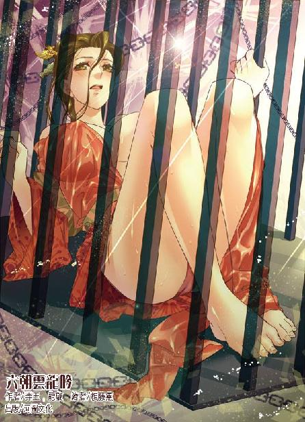

第44集·太泉诅咒
太泉古阵篇（3/7）
出版日期：2013-04-03
【本集内容简介】
遭到行淫兽及赤阳藤围困的程宗扬发现体内死气可以让他“隐形”，从而保住一命。小紫发现这两种生物是一体同生，除了要求程宗扬将杀手姐妹花绑来当侍奴以外，甚至想要移植赤阳藤！
程宗扬在太泉古阵发现一台摄影机，其中存放着让他无比惊讶的影像。苍澜外的雾障和影片透露的信息有何关联？栖凤院里的“外姓人”究竟在做哪些勾当？
※ ※ ※ ※ ※

封面人物：朱殷
隧道内散落着各种变异野兽的尸体，空气中弥漫着呛人的血腥气。“呼”的一声，一头牛犊大小的苍狼被人抛开。武二弓着腰扒拉几下，从尸堆中扒出一个巨大的包裹，往黑沉沉的钢轨上一挂，扛在肩上，挥着手意气风发地嚷道：“这边！这边！”
萧遥逸用衣袖捂着鼻子，“二啊，你还真会找地方藏。”
“藏啥啊？一堆破纸，又不值啥钱。”武二郎一边打着马虎眼，一边把水龙头往怀里掖得更牢点。
左彤芝望着面前的满地尸骸，心有余悸地说道：“幸好大伙儿先避开了，要不然……”
此时众人正在当初进来的隧道里，那股兽群只有一小部分冲进隧道，来不及逃走的探险者拼尽全力，最后还是被尽数扑杀。那些妖兽不仅体型出奇的庞大，而且出现各种奇特的变异。带翅的苍狼，长有尖角的巨蛇，生着獠牙的野狐……甚至连野鼠也变化出可怕的利爪。
朱老头趿着双破鞋溜跶过来，“啧啧”地咂着嘴。铁中宝打趣道：“老头，算你运气好，要不是碰上我们，你早成这些怪物的点心了。”
“瞎说！”朱老头翘着胡子道：“别看大爷上了年纪，腿脚利落着呢，一口气跑十来里山路都不带喘的。”
众人都笑了起来，“这老头儿，死鸭子嘴硬啊。”
萧遥逸道：“左姐姐，我们要去找人，出了隧道，恐怕就不能同行了。”
左彤芝沉吟片刻，“也好。我们这一趟折损了不少兄弟，算算时间，河西派的人手也该到了，不如先去与他们会合，然后再做计较。”
萧遥逸笑道：“那颗赤阳圣果被我得了，姐姐不会怪我吧？”
左彤芝嗔怪地瞥了他一眼，“哪儿能呢？不说这个了，惠远小师傅和宁姑娘都受了伤，我送他们出去。”
萧遥逸道：“多谢姐姐。”
“谢什么谢？论理该多谢你们呢。”左彤芝道：“我们在镇上等你们，找到程公子，记得来会合。”
铁中宝拉着武二郎，一手拿着钱袋，死活要塞给他。
武二瞪着眼睛道：“铁兄弟！你这是干啥！”
“铁锭的钱——这点儿算是定金，剩下的兄弟出去给你凑。”
“那怎么成！”
铁中宝攥住武二的手，叫道：“二哥！信不信我给你跪下？”
“你这……唉！”武二一跺脚，只好把钱铢揣到怀里。
铁中宝笑逐颜开，嚷道：“二哥！兄弟先出去！这鬼地方啥东西都没有，等二哥回来，兄弟好好请你喝一场！”
武二郎一拍胸膛，豪气干云地说道：“酒逢知己千杯少！喝死拉倒！”
左彤芝悄悄向武二郎使了个眼色，武二郎大咧咧道：“放心！记着呢！”
左彤芝嫣然一笑，拱手道：“告辞！”
双方在隧道口分手，凉州盟一行带着伤重昏迷的惠远和宁素原路返回，剩下朱老头、萧遥逸和武二郎三个人大眼瞪小眼，最后不约而同地扭头看着小紫。
“程头儿……离这里很远。”小紫抱着雪雪，一手抚着它的绒毛，过了会儿说道：“先回车上好了。”
武二小声对萧遥逸道：“小子，程头儿被埋到地里了，紫丫头带咱们跑这儿来啥意思？”
萧遥遥道：“你知道程头儿在哪儿吗？”
“这鬼地方，我咋知道？”
“那就听紫姑娘的。”
武二琢磨半晌，小声嘀咕道：“这丫头不会是给程头儿下蛊了吧？”
※ ※ ※ ※ ※
阴暗的建筑内，一条瞳孔赤红的触肢像蛇一样盘绕着弯曲下来，独目一闪一闪散发着幽光。
一具赤裸的女体被触肢紧紧缠住，双腿被拉得张开。虞白樱玉体绷紧，双眼愣愣看着触肢，似乎已经骇得呆滞。
红瞳触肢盯着虞白樱下体，接着向前一扑。就在这时，虞白樱美目突然迸出一缕寒光，双膝猛然合紧，重重夹住触肢。触肢坚韧的肢体被撞得扁了下去，红色的独目向外鼓起。
周围的触肢像受惊的蛇群一样扭动起来，纷纷缠住她的手脚。虞白樱拼尽全力，双膝狠命一绞。以她的修为，就是石柱，被她全力一击也会碎成齑粉，然而那条触肢有着出奇的柔韧性，受此重击仍然没有断裂。
周围的触肢蜂拥而至，纷纷缠住她双膝一点一点拉开。虞白樱口中泛起一丝苦涩，没想到自己大耻未雪，却丧命在这些怪物手中。
忽然身上拉力一轻，紧绷的触肢猛然弹开。虞白樱睁开眼睛，只见一个年轻人，正挥动珊瑚匕首，将她身上的触肢一一切开。
虞白樱一怔之下，顾不上自己胴体还赤裸着，立即配合他的出手，扯开断裂的触肢，挣脱触手怪物的纠缠。
虞白樱玉体悬空，丰乳雪臀一览无余，程宗扬虽然不是成心去看，但目光扫到，免不了一阵眼花缭乱，险些割到虞白樱身上。程宗扬连忙收敛心神，倚仗珊瑚匕首无坚不摧的锋芒，一口气斩断数根触肢。
剩下的触肢僵硬片刻，接着啮食孔同时张开，发出一声无声的尖叫，然后潮水般退开。
“快走！”程宗扬一手扯起虞白樱，往触手退却的反方向逃开。
“呯！”程宗扬踹开一道安全门，把躲在后面的徐君房吓了一跳。他看着赤条条的虞白樱，期期艾艾道：“这……这……”
程宗扬心里叹了口气，自己虽然嘴上说得硬，终究还是不能见死不救，眼睁睁看着这么一个白生生的大美人儿被那种令人厌恶的妖兽吞噬掉。
程宗扬放开虞白樱的手臂，然后退开一步，“虞大姐，咱们现在同病相怜，如果想活着出去，先把以往的恩怨放一边，怎么样？”
虞白樱一手拂着散开的发丝，一边冷冷道：“给我件衣服。”
程宗扬抬手去解衣扣，忽然手臂一缩，险险避开虞白樱一条断月弦。他惊出一身冷汗，叫道：“刚脱身就对救命恩人下手？你也太毒了吧！”
虞白樱寒声道：“把你的匕首给我，我饶你一命！”
程宗扬心下雪亮，这贱人刚刚死里逃生就悍然出手，完全是为了自己手里的珊瑚匕首。那触肢寻常刀剑都砍它不动，利如刀锋的断月弦也无能为力，像虞白樱这样的杀手，只有把珊瑚匕首抢到手才有安全感。
程宗扬冷笑道：“都剥成光猪了还嘴硬。徐掌柜！咱们走！”
徐君房巴不得赶紧离开，闻言撒腿就跑。程宗扬伸手往他肘下一托，“走楼梯。”
徐君房边跑边喘着气道：“仙人住这地方也太高了……”
程宗扬道：“赶紧想想，这边的出口在什么地方？”
徐君房苦着脸道：“我真没来过。”
“你没来过，可鬼谷先生来过。你好生想想，他是不是对你说过什么？”
徐君房愕然道：“你怎么知道鬼谷先生来过？”
程宗扬没好气地说道：“他没来过怎么会知道行淫兽？”
徐君房一拍脑袋，然后拧着眉头思索起来。
程宗扬回头望去，只见虞白樱双手掩在胸前，迈着两条白生生的美腿远远跟在自己身后。
“魔墟！”徐君房忽然叫道：“这里是魔墟！”
“哪一层？”
“不在十八层中间。”徐君房道：“太泉古阵有些隐秘之地根本无路可入，机缘凑巧也许就进去了，魔墟就是其中一处秘境。”徐君房又补了一句：“这都是先生说的。”
“鬼谷先生还说什么了？”
徐君房苦想半晌，然后道：“先生说：这里原是仙宫。因为地陷东南，坏了风水，仙人就都离开了，后来被妖怪窃居，成了妖魔洞府。仙人知道后，回来清除了妖魔，也没有再住，就成了废墟。论年头，比外面的十八层还早些。”
程宗扬越听越是纳闷，难道太泉古阵不是六朝的未来，而是不同时代的城市叠合在一起的？无论鬼墟的来历如何，至少这里曾经是一座人类的城市——从楼梯的高度就能判断出来。
“这么说，整个魔墟应该都是空的？”
徐君房心里也没底，“差不多吧。”
程宗扬道：“看来仙人没有把妖怪清除干净——至少还有漏网的行淫兽。”
“我也觉着纳闷，这妖怪是哪儿来的？”
两人一路下了十几层，徐君房跑得气喘吁吁，刚想开口歇息一会儿，程宗扬忽然停住脚步。徐君房正往前走，被他一把拉住，接着被程宗扬捂住嘴巴。
顺着程宗扬的目光看去，徐君房不由打了个哆嗦。下方的楼梯拐角处隐隐攀出一条细藤，细如人指的茎身微微泛起赤红的颜色，仿佛活物般无风而动。
程宗扬按住楼梯扶手，伸头往下看去，头皮顿时一阵发麻。脚下的楼梯间充斥着无数根茎，仿佛一堆交错的血管，将楼梯完全堵住。那些赤红的根茎从建筑内部延伸过来，占据了整幢大楼。站在楼梯上，仿佛进入一个巨人身体内部，看到他密布的血脉。让人禁不住怀疑，如果一刀斩断眼前的根茎，是不是会喷溅出鲜血？
程宗扬小心往后退了几步，避开赤阳藤占据的范围，一边暗自盘算。如果魔墟是一个独立的空间，赤阳圣果在太泉古阵出现地点的不固定也可以理解了。真实的赤阳圣果只有一株，就在这幢大楼内。它利用发达的根茎穿透魔墟的空间，出现在太泉古阵不同的地点，伺机捕食猎物。
被赤阳藤捕杀的探险者中不乏强者，他们的血肉精华被赤阳藤吞噬殆尽，才凝结成赤阳圣果——赤阳圣果仅仅拳头大小的果实，却要靠无数强者的血肉和一整幢大楼的根系来支撑，可以想象它的珍贵与难得。
问题是程宗扬不想成为赤阳藤的养分，他只想离开这个空间。赤阳藤既然能钻出去，自己也肯定有办法出去。
脚下的根茎似乎感受到人类的气息，慢慢扭动着向上伸来。
程宗扬拉起徐君房，“回去！”
两人折回楼上，与虞白樱擦肩而过。虞白樱犹豫了一下，退开丈许。程宗扬恼她反咬一口，故意哂道：“别挡了，挡住上面还能挡住下面吗？”
虞白樱美目生寒，断月弦蓦然飞出，旋即被程宗扬一刀劈了回来。如果不是丝弦轻飘飘犹如蛛丝，这一下就会被他的珊瑚匕首斩断。
虞白樱浑身上下只有颈中那条嵌着黄泉玉的护颈，手上的断月弦也只剩下三根，如果再有损失，就成了手无寸铁，完全落在下风。
程宗扬没理会虞白樱的怒火，他走到楼梯拐角的安全门处，用珊瑚匕首在门缝间一划，挑断门锁，然后轻轻推开金属制的安全门。入眼的情形使程宗扬微微一怔，接着喜出望外。
安全门旁边，赫然是一个在六朝从未见过，但自己熟悉得不能再熟悉的金属门，而且上面竟然还有灯光显示——一个还能工作的电梯！
楼道内同样充斥着赤阳藤血红的根茎，但程宗扬已经没有退路，不管这电梯是不是真的还能用，自己都要赌上一把。
离电梯最近的根茎还在六七步外，程宗扬轻手轻脚地走过去，尽量不发出丝毫声音，然后轻轻按下按钮。灯光闪烁着从一楼开始，逐渐上升。到第七层时，电梯内传来“叮”的一声，金属门缓缓打开。
突如其来的声响使远处的根茎猛然一动，然后从茎身上抽出一条细藤，飞快伸来。电梯门刚一打开，程宗扬便将徐君房一把推了进去，接着回过身，珊瑚匕首狠狠挥落，斩断细藤。
就在这时，身边雪白的身影一闪，却是虞白樱闪身抢进电梯，随即一掌将赶来的程宗扬逼开。
徐君房大喝一声：“黑虎掏心！”说着双手握拳朝虞白樱胸口打去。虞白樱冷笑着抬手一掌，正中徐君房面门，把徐大忽悠直接拍晕过去。
虞白樱扼住徐君房的喉咙，冷喝道：“滚开！”
程宗扬道：“虞姐儿，别干蠢事。没有他这个向导，你想从这里出去，根本就不可能。”
“我数到三、二、一……”
程宗扬身后的根茎像潮水一样波动着涌来，被斩断的细藤从断口处重新抽出新枝，后面每条根茎都同样抽出一条细藤，朝程宗扬围拢过来。
在虞白樱的威胁下，程宗扬后退一步，几乎触到那些扭动的细藤。虞白樱把徐君房扔在电梯角落里，电梯门缓缓合上。
就在这时，虞白樱脚踝一紧，一条细藤无声无息地从门下伸来，缠住她雪白的玉足，接着挑起，将虞白樱横拖出来。程宗扬旋风般转身，珊瑚匕首寒光闪动，将逼来的赤阳藤尽数斩断，然后猎豹般朝电梯蹿去。
一条藤蔓长鞭般抽来，缠住程宗扬的双腿，只这片刻耽误，电梯门已经紧紧关上。程宗扬挑断赤阳藤，接着转变方向，飞身朝楼梯口扑去。
眼前血影闪动，却是楼下的根茎纷纷抬起，仿佛一张交织的巨网，罩住整个楼道，接着从安全门内伸了进来。程宗扬在门侧一蹬，返身掠回。他收敛气息，趁身后的藤蔓还未合拢，直接突入进去，然后飞身攀住墙上一支壁灯，落叶般悬在上面。
赤阳藤终究只是植物，虽然对人类的气息、环境温度和气流波动十分敏感，但缺乏起码的视觉，尤其是程宗扬收敛气息，同时从丹田的生死根释放出死气，竟然瞒过了近在咫尺的赤阳藤。
虞白樱就没有这样的好运气，她被赤阳藤缠住的肌肤传来一阵刺痛，藤身不断收紧，将她朝藤丛中拽去。虞白樱双手攀住一根栏杆，修长白美的玉体被拉得笔直。她竭力挣动，两只圆乳挺在胸前，像水球般凌空乱撞，试图从藤条间挣脱出来。一条赤阳藤攀上她的手臂，一路抽出细嫩的藤芽，将她双臂缠绕起来，接着身后传来窸窸窣窣的声响，却是那一丛妖蛇般的触肢去而复来。
虞白樱赤裸的胴体大半被藤身覆盖，她抬眼望着悬在墙上的程宗扬，目光不住变幻，方才经历的恐惧使她终于吐出两个字：“救我……”
程宗扬带着一丝恶意的快慰耸了耸肩，表示自己爱莫难助。
“虞姐儿，你刚才要不是推我一把，咱们早就坐电梯下楼了。现在你只好自求多福了。别害怕，我瞧着那个触手怪对你挺有兴趣的，估计一时半会儿死不了……”
※ ※ ※ ※ ※
悬在天际的迷魂桥在薄雾中时隐时现，宛如一个繁复华丽的花结，令人一眼看去就无比纠结。桥下的树林中，一群人行色惊慌、如丧考妣，却是在奈何桥外偶然遇见的周族众人。那位妖孽级天才的周少主踪影不见，为首的是那名老者。
一个三白眼汉子道：“主灶……”老者狠狠瞪了他一眼，他连忙改口，“大主灶，咱们往哪儿去？”
老者刚要回答，突然像兔子一样蹿了起来，尖叫道：“九天玄兽！”
树林里停着一辆通体漆黑的汽车，它泊在一堆乱石中间，表面又盖着树枝，如果不是众人走到跟前，只怕也发现不了。
周族众人顿时大哗，纷纷叫道：“快躲开！”
那三白眼汉子却没见过当日的车祸现场，眨巴着眼睛道：“怕什么？不就是九天玄兽蜕的壳吗？又不是活的。”
有人颤声道：“这九天玄兽好像正是撞到少主那一头……”
三白眼汉子小心伸长脖子看着车头，“少主就是被这——”
话音未落，踞伏的九天玄兽突然一声怒吼，向前蹿出丈许，重重撞在前方的岩石上，那三白眼汉子根本没反应过来，直接被撞得骨折筋断，七窍出血。
“快逃啊！”周族众人大叫着，转身拼命逃开。
车内武二郎紧紧攥着安全环，脸色煞白地叫道：“小子，你行不行啊？”
“失误！失误！”萧遥逸重新挂档，“这个应该是往后退的……”
车身又往前一冲，将岩石也挤碎几块。萧遥逸扭头去看小紫，却见她闭着眼睛，一手掐着印诀，正在凝神。萧遥逸话到嘴边，改口道：“武二，下去！”
武二一脸莫名其妙，“干啥啊？”
“抬车！”萧遥逸卷起袖子，“活人不能叫尿憋死。不就转个头的事吗？抬起来一转，多省事！”
“说啥呢！你是省事了，可这不省力啊！别拉我！别拉二爷……哎你个小狐狸欠揍是吧！”
※ ※ ※ ※ ※
程宗扬推过一张金属长桌，把门顶上，无数藤条蜂拥而至，砰砰作响地撞在玻璃上，宛如无数扭动的血蟒。
程宗扬松了口气，然后打量着周围，这是一个玻璃房间，看房间的结构，以前大概是进行无菌操作的试验室——天知道那些“仙人”在这里搞的什么试验，不过太泉古阵的玻璃比一般的钢化玻璃结实许多，这些赤阳藤再强悍终究是植物，一时半会儿也钻不进来。
虞白樱像粽子一样躺在地板上，她大半身体都被赤阳藤缠住，藤身虽然已经被程宗扬切断，却没有松开的迹象，反而收得愈紧，像绳索一样勒进她白嫩的肌肤内。
“别乱动，我帮你解开。”
程宗扬拽住一截藤条，指尖猛然一痛，却是藤上伸出一根细刺，扎进皮肤，像蚊子一样吸食自己的鲜血。程宗扬本来想松手，又改了主意。自从生死根移至丹田，无论是吞噬死气的效率，还是自己对气息的操纵，都有了一个飞跃。程宗扬丹田气轮微动，往指尖送出一股死气，那根细刺果然从皮肤中退出，像从未出现过一样收回藤内。
程宗扬呼了口气，他一直怀疑，被赤阳藤捕获的探险者中，比自己修为高的比比皆是，手持神兵利器的也不知道凡几，没道理他们都被赤阳藤吞噬干净，偏偏自己能轻松脱身——这用运气没办法解释。
看来关键还在于自己的生死根。赤阳藤并没有智慧，它所有的反应只是出于生存的本能。在它的感知里，充盈着死亡气息的自己，大概和一块岩石差不多。
终于找到从赤阳藤笼罩下脱身的关键，程宗扬整个人都轻松起来，他笑道：“虞姐儿，别紧张，你只用抬下屁股就行。”
虞白樱手脚都被赤阳藤缠住，无数细刺同时刺入肌肤，吸食血液，使她的力量不断流失。她咬紧牙关，身体一动不动。
程宗扬关切地说道：“虞姐儿，你要这么硬挺下去，信不信一会儿就会被吸成人干？”
虞白樱咬牙道：“先把我手解开！”
“要不先解屁股，要不都不解。你自己选吧。”
虞白樱挣扎半晌，终于勉强抬起腰臀。她赤裸的雪臀丰满而又结实，白艳的臀肉此时被两条细藤十字形缠住，雪团般的肌肤紧紧绷着。程宗扬拉住外面一条藤条，稳住力气一拔。虞白樱已经咬牙强忍，这时仍忍不住痛叫一声，白花花的臀肉跳动着弹起，皮肤上留下一排细小的血孔，同时渗出血来。
程宗扬没想到短短几分钟时间，那些细刺竟然扎了这么深，眼看虞白樱痛得浑身战栗，他放慢动作，将另一条细藤一寸一寸拔起。
坚韧的赤阳藤紧贴在虞白樱的臀沟内，随着藤身抬起，血红的尖刺一根一根拔出，在雪白的肌肤上留一个个溢血的细孔。其中一根尖刺扎在虞白樱肛洞边缘，这时被程宗扬一拔，银发丽人红嫩的菊肛被扯得微微翻开，却未能拔出尖刺。
程宗扬一手按住她的肛洞，虞白樱浑身都战栗了一下，她咬紧牙关，从齿缝中吐出一个词：“滚开！”
程宗扬没理睬她的反对，手指按住她的肛肉，把滴血的尖刺拔了出来，一边道：“摸摸怎么了？有种你别叫救命啊。”
虞白樱脸上时红时白，等他松开手才暗暗透了口气。但接下来的部位更加敏感，细如手指的藤身从她秘处缠过，那个年轻人毫不客气地剥开她下体柔腻的花瓣，将深入嫩肉的尖刺从她玉户拔出。
虞白樱身体像触电一样颤抖着，感受着尖刺离体的痛楚，然而耳中传来的话语，却让她羞恨交加。
“虞姐儿原来不是白虎啊，这小毛毛修剪得真好看。难怪敢穿那么窄的小内裤还不怕露毛……咦？”
程宗扬抬头看着她的面孔，然后“嘿嘿”笑了起来。
虞白樱痛得浑身战栗，咬牙道：“你笑什么？”
程宗扬在她耳边小声道：“你湿了……”
虞白樱一张玉脸涨得通红，就在这时，程宗扬忽然回过头，大叫一声：“糟糕！”
那些赤阳藤汇聚在一处，紧贴在玻璃墙上，温度急剧攀升。原本透明的玻璃像被烈火烧炙一样，颜色渐渐发红，要不了多久就会被融化。
程宗扬顾不上和虞白樱调笑，挥刃挑断她手脚的细藤，“快走！”
虞白樱站起身，握住自己身上的藤条用力一扯，将斩断的藤条大半扯落，然后紧追着那个年轻人掠到窗边。
程宗扬拉开窗户，朝下看了一眼，然后张开双臂，“来！”
虞白樱犹豫了一下，然后扑到他怀里。程宗扬把绳索系在窗边，然后纵身往下掠去。
七层的高度说高不高，说低也不低，程宗扬本来看准下方一个土堆，料想以自己的修为，顶多打个滚就能爬起来，谁知落下才发现，那土堆只是一层浮土，下面竟然是空的，两人直堕下去，在黑暗中东碰西撞，最后在地上重重一撞，摔得分开。
虽然隔着厚厚的帆布牛仔服，程宗扬腿侧还是被磨破一片，传来火辣辣的痛楚，他活动了一下手脚，好在骨头没事。
程宗扬撑起身，听了听周围的动静，然后叫道：“虞姐儿？”
虞白樱冷冰冰的声音传来：“这里。”
程宗扬拿出火褶，只见虞白樱坐在不远处，一手抚着脚踝，脚背肿起，却是崴伤了脚。
虞白樱道：“这是什么地方？”
程宗扬举起火褶，眼前的地道犹如迷宫，单是身边就有七八个洞口，无数弯弯曲曲的洞穴交织在一起，复杂程度几乎能赶上外面的迷魂桥。
程宗扬皱起眉，良久才道：“看样子……应该是个蚂蚁洞。”
※ ※ ※ ※ ※
两人望着迷宫般的蚁穴，都不由一阵心悸。眼前的蚁穴足够一个正常人直立而行，可以想象当初魔墟中的蚂蚁有着怎样庞大的体积。
程宗扬伸出手，虞白樱却没有动，只盯着他，目光愈发寒冷。
程宗扬抬起一根手指摇了摇，“虞姐儿，我劝你别乱打主意。这鬼地方，我要有个三长两短，你恐怕也活不了。就是仇人，生死关头也能同舟共济，何况咱们又没有什么了不起的深仇大恨，是不是？至于你和岳鹏举之间的仇怨，跟我一文钱的关系都没有。我要想杀你，你这会儿早就变成肥料了，还用我几次三番地救你吗？”
虞白樱眼中的寒光渐渐淡去，最后伸出一只手。
程宗扬扶她起身，一边笑道：“虞姐这身材，比穿着衣服还好看呢。”
虞白樱冷冷道：“你想看就看，又不会少块肉。”
“我倒真想看，可惜时间、地点、心情都不凑巧，更要命的火褶还得省着点用。要不咱们约个时候，改天仔细看看？”程宗扬一边说笑，一边收起火褶，揽住虞白樱的腰肢，让她半边身体都依在自己身上，摸索着向前走。
虞白樱停下脚步，坚定地说道：“这边。”
程宗扬摇头道：“不行，那个洞口太窄了。”
虞白樱讥诮道：“你知道方向吗？”
程宗扬看看周围漆黑的空间，苦笑道：“我要能分出方向就好了。”
“左边是北，右边是南，我们面对的是东方。”
程宗扬惊奇地说道：“你居然还能分出来方向？”
虞白樱冷冷道：“堕入蚁穴的时候我们在大楼的南边，如果想逃出去，只有继续向南走。”
程宗扬道：“这样啊。我们往北，徐掌柜还在楼里呢，我要救他出来。”
虞白樱推开他，独自朝右边的洞口走去。
“小心！”程宗扬急叫道：“那边危险！”
程宗扬刚纵身去追，便看到那具白艳而朦胧的胴体上蓦然多了一条黑色的绳索。
一条黝黑的触肢悄无声息地从洞中挥出，蛇一般卷住虞白樱的腰身。程宗扬抢过去，搂住虞白樱的上身，一刀斩断触肢。
一对丰挺的乳房撞在臂间，跳动间传来诱人的弹性。不过程宗扬没来得及顾上享受，身下便一痛。那条断掉的触肢竟然昂起头，在他身上狠狠咬了一口。
即使隔着厚厚的帆布牛仔裤，程宗扬还是痛得变了脸色，他咬牙扯下断肢，腾身跃入左边的洞口，落地一个踉跄，跪倒在地。
“干！”程宗扬大骂一声，“这家伙有毒！”
黑暗中看不到虞白樱冰冷的神情，只能听到她冷漠的声音：“放血。”
“放个屁啊！我……”
程宗扬脑中一阵眩晕，眼前冒出无数金星。他挣扎着扯过背包，摸出一粒药丸吞了下去。这是死丫头给自己准备的祛毒丹，作为毒宗的看家秘药，祛毒丹能克制或者减轻九成以上的毒物药性——但触肢的毒性显然属于那例外的一成，吞下祛毒丹后，伤口的痛楚非但毫无减轻，反而连身体都变得僵硬，与此同时，浑身的血液像火焰一样焚烧起来，仿佛要把他的肌肉、骨骼都烧成灰烬。
黑暗中，看不到虞白樱的表情，只能感觉到她无声的冷漠。忽然手上一动，虞白樱从他僵硬的手指间夺走那把珊瑚匕首，然后扯走他肩后的背包。
※ ※ ※ ※ ※
“大笨瓜。”
小紫睁开眼睛，“向右。”
武二郎叫道：“紫丫头，你没搞错吧？右边没有路啊！全是灌木丛！”
抱着方向盘的萧遥逸最有发言权，直接道：“碾过去！”
巨大的车身犹如一头怪兽闯入灌木丛，将沿途的枯藤小树一并碾平。枝叶纷飞间，一条布满鹅卵石的小溪出现在面前。车身震动着，像在卵石上跳舞般一路驰过。几名探险者正在溪边徘徊，见状急忙呼喊躲避。
武二郎紧紧攥着车窗边的安全环，张口道：“我干干干干干干干……”
汽车毫不停顿地冲过小溪，萧遥逸两眼发光，一脸兴奋地笑道：“二啊，你再想干，也用不着说七回吧？”
武二没好气地说道：“二爷那不是颠的吗？哎！小子！你看着点路路路路路路路！”
车轮狠狠一颠，碾过一堆石块，然后沿着一道斜坡直冲下去。武二郎张大嘴巴，一对牛眼几乎瞪了出来，眼看着山谷下方一道墙体越来越近，最后轰然一声，尘雾弥漫。汽车终于停住。
后门打开，一条雪白的小狗先蹿了出来，朝小镇后狂奔过去。接着朱老头连滚带爬地下了车，抱着旁边一棵树，两腿不住哆嗦，颤声道：“哎哟，大爷这条老命啊……”
萧遥逸脑门磕了一下，青了一块，心情却是极好，他哈哈大笑，一手拍着方向盘叫道：“痛快！”
放开方向盘推了下门，发现前车门被墙体卡住，萧遥逸索性狸猫般一翻，从后面的车门钻出来，然后潇洒地拍了拍衣袖，笑道：“这比骑马可快多了。”
武二郎冲出来，怒视着小狐狸，刚一张口，便“哇”地狂吐起来。
萧遥逸闪身跳开，讶道：“二爷，你早上吃多了吧？”
武二喘着气道：“二爷……二爷……有点晕……”
“哎哟，别人晕船，二爷晕车？”萧遥逸道：“这我还是头一回见。”
武二叫道：“谁家的马车能赶得跟你一样快？呕……”
小紫仰脸看着天际的浓烟，精致的眉头蹙紧然后松开，“原来在这里啊。”
镇后矗立着一座锥状的山脊，顶端不时喷出火焰和浓烟。一条赤红的长藤从烈火间蜿蜒伸出，密密匝匝盘绕在火山顶部，浓密的藤叶间，隐约露出一个巨大的洞口。
“这就是客官要找的火焰山了。太泉古阵仅此一处，绝无分号！”宋三笑嘻嘻伸出手，“带路钱每人一贯，请三位客官打赏。”
一个美貌妇人微微颔首，旁边的侍女随即抛出一只钱袋。宋三接在手里，笑道：“几位若是还要什么服务，尽管找我宋三！”
侍女凤眼一瞪，“滚！”
宋三笑容不改，揣起钱袋，拱手打揖地离开。
那女子回头低声道：“帮主，不是说好在这里会合吗？为何不见广源行的人影呢？”
那位帮主淡淡道：“他们查到一点线索，似乎是以前丢失的货物，眼下正赶去探查。”
白仙儿望着山顶的赤藤，生气地说道：“哪里有赤阳圣果？早知道刚才那两颗夺走一颗便是！”
她旁边的男子温言道：“这里才是赤阳圣果的主藤所在。方才那两颗抢的人太多，只怕出力也讨不得好。”
“你就是怕那贱人！”白仙儿不满地说道：“爹爹闭关，宗主的印信还在我手里，惹恼了我，直接请出印信，把她革出宗门！丁师哥，我们找到赤阳圣果便回宗门好吗？”
丁志雄宠溺地笑了笑，“当然要回去。”说着双目在藤叶间仔细搜寻起来。
萧遥逸摇着折扇笑道：“不会运气这么好吧？再让我捞到一颗赤阳圣果，那可赚大了。”
武二郎抱着肩膀，两条浓眉像打结一样拧在一起，似乎想上前看个仔细，又像是要随时开溜。
萧遥逸见他没接腔，不由讶道：“二爷，怎么哑巴了？”
武二哼了一声，把自己在古阵捞到的几件小东西掖好——他那身牛仔服有的是口袋，装个塑料袋、水龙头、钥匙什么的，毫不费事。
萧遥逸叫道：“武二！钥匙怎么还在你手里？”
武二压低声音道：“瞎嚷嚷啥呢？这是程头儿送我的！”
“什么送的？不是借你用用吗？”
“二爷这不是还没用完吗？”武二道：“皇帝都不急，你个太监急啥呢？”
“二啊，你不会是留着钥匙，还想下去捞东西吧？”
“嘁！小看二爷不是？二爷门都没锁，还要啥钥匙？留着是个念想，你小子懂不？”
※ ※ ※ ※ ※
太泉熊谷，地下金库。
一个脸色阴沉的男子仔细看着一副甲胄，接着又拆开里子，翻出里面暗藏的印记，良久才道：“没错。就是那批货。”
旁边一个胖子抚掌道：“原来藏在这里。好手段啊好手段。”
玉魄子神色萎顿地靠在柱上，低喘道：“我们……什么都没拿……都，都在这里了……”
胖子蹲下身，笑眯眯道：“道长不用惊慌。我们广源商行是正派生意人，请道长过来，只是找寻以前丢失的一批货物。如今既然找到了，少不了要多谢谢道长的带路之德——”
说着胖子手一递，一柄短剑刺进玉魄子胸口，鲜血顺着短剑上的血槽直淌出来。
脸色阴沉的男子对旁边的血腥视若无睹，他放下甲胄，用一条巾帕抹了抹手指，“朱仙子得了赤阳圣果，又让我们找到这批失落十余年的货物，这趟太泉之行，已经超出预期了。”
胖子拔出短剑，一边把玉魄子的脸割下，一边道：“听说光明观堂的鹤羽剑姬也赶来太泉，朱仙子曾与她交手，不分胜负。”
男子阴阴一笑，“若是鹤羽剑姬折翼于此，此行收获之丰，难以预计。”
胖子道：“正事要紧。嘿嘿，光明观堂少不得要与黑魔海恶斗一场，用不着咱们插手。”
男子站起身，“走吧。洛帮的何帮主、剑霄门的黎门主、青叶教的尹夫人多半都已经到了。”
胖子毁掉玉魄子身上能辨认出身份的特征，然后道：“焚老鬼说的靠谱吗？咱们下这么大本钱，万一捞不回来，那可赔大了。”
男子阴恻恻道：“几个小帮派，也算不得太大本钱。”
※ ※ ※ ※ ※
雪雪叼着一只沾满泥土的破鞋过来，得意地朝众人摇头摆尾。
武二郎道：“从哪儿捡的？这不是程头儿的啊。”
萧遥逸一眼认了出来，“是徐瘦子的。看来就是这里。”
小紫抱起雪雪，望着远处的洞口道：“我要去那里。”
萧遥逸毫不含糊，“走！”
武二郎却有些不大情愿，左右看了一圈，说道：“老头儿呢？”
萧遥逸道：“他遇见一个熟人，屁颠屁颠去打招呼了。”
武二听着稀罕，“那老头还有熟人？”
萧遥逸挤眉弄眼地说道：“我远远瞧了一眼，好像还是个尼姑……”
※ ※ ※ ※ ※
“阿弥陀佛，善哉善哉。”慈音温声慢语地说道：“出家人不蓄财物，哪里有钱给施主呢？”
宋三气得笑了起来，“师太，你这可不厚道啊。别人带路钱都给的两贯，我瞧你是出家人，只收二百文，你怎么能不认账呢？”
慈音低眉顺眼地说道：“出家人不打诳语，贫尼委实一文钱都没有。”
宋三道：“师太，我们在太泉古阵挣的都是性命钱！不瞒你说，我上有老下有小，全家七八只嘴都指望我混饭吃呢。你这一路也看见了，太泉古阵这里可没有什么是白给的，别说带路了，你就是问句话，都得给钱。瞧瞧瞧瞧，这些都是带路挣的钱。”
慈音盯着他的钱袋，眼睛顿时一亮，道：“贫尼身无分文，如何是好？”
“这我不管。带路收钱，天经地义，钱多钱少事小，这规矩不能坏。”
慈音叹道：“贫尼真是一文钱都没有。除非……除非是化些缘来。”
“给你带路算我倒霉。”宋三道：“赶紧化！”
慈音双手合什，躬身道：“多谢施主。”说着她直起腰，从褡裢里取出一只木钵递到宋三面前，“阿弥陀佛，善哉善哉。请与施主结个善缘。”
宋三怔了片刻，黑着脸道：“好嘛，化缘化到我头上来了。”
慈音恭敬地说道：“施主且请息怒。施主施财予佛，贫尼得了钱便能与施主结清此债，如此一来，岂不两厢顺遂？况且方才施主也说，这阵中不甚太平，多有危险，如今一出一入，施主等于分文未付便平白与我佛结此善缘，无论身在三千世界何方，无不蒙受我佛庇佑，逢凶化吉，遇难呈祥。这等好事，哪里去找呢？”
“嘿！你这尼姑！”宋三眼看从她身上榨不出钱来，又被她说得心动，索性道：“也罢！就当我日行一善。”
宋三刚取出一枚银铢，慈音便笑着怂恿道：“左右都要落在施主的口袋里，何妨做个大布施呢？”
宋三一想也是，干脆摸出几枚金铢递来。慈音接过钱，合在掌中默念片刻，然后原样还给宋三，“多谢施主供奉，施主一片虔心，我佛皆已知闻，日后必有德报，善哉善哉。”说罢飘然而去。
宋三平白施舍一场，也觉得好笑，正拿着钱袋准备收起金铢，突然间变了脸色。他拿起一枚金铢看了半晌，然后放在齿间一咬，接着跳脚骂道：“天杀的贼尼姑！连老子的血汗钱都敢骗啊！”
慈音佛法精深，对声名这些身外之物视之犹如浮云，宋三的咒骂听在耳中不过付之一笑，毫不介意，只小心把那几枚金铢贴身收好。
忽然后面一声低咳，一个苍老的声音唤道：“叶慈。”
慈音脚步微微一顿，然后头也不回地走远。
※ ※ ※ ※ ※
程宗扬只觉自己像置身火炉之中一样，浑身气血如沸，小腹一团炽热的气息四处奔突，似乎将要冲破皮肤，体内密布的神经仿佛烧红的铁丝，寸寸作痛，再持续片刻，神智便会受到无法恢复的重创……
忽然丹田微微一震，那股沸油般的热气仿佛找到一个宣泄口，狂涌而出。
程宗扬清醒过来，他睁开眼睛，先看到一只雪团般的美臀，白腻的臀肉浑圆肥翘，在黑暗中散发着淡淡的肤光，丰腴的臀缝儿间，绽露出柔嫩的菊孔和一朵鲜花般娇艳的性器。
下身被触肢咬破的伤口微微传来刺痛，同时又有种难言的软腻触感——程宗扬还未完全清醒，浑身的热血就猛地涌了过去……
“啪”的一声，下身被人重重抽了一记，虞白樱冷冷道：“收敛些，先挤出毒液。”
程宗扬支起上身，只见那颗从朱殷手里讹来的夜明珠嵌在泥壁上，一个玉冠银发的丽人正伏在自己腿上，挤弄自己的伤处。
丽人白腻的肉体在珠辉下散发出迷人的光泽，她侧着身，跪伏在地，两只丰挺的雪乳贴在自己腿侧，滑软的腰肢宛如柳枝，白生生的粉臀翘在自己手边，诱人无比。
自己被触肢咬到的不是别处，正是要命的部位，虞白樱确实是在给自己挤出毒液——可她的动作和挤牛奶差不多。那双白嫩的手掌在那根火热的阳物上不住捋动，带来的刺激足以让根面条都硬起来。
“干！”看到虞白樱手中那根肿胀的阳物，程宗扬顿时狂骂一声。自己的阳具肿起来足有鹅蛋粗细，看上去随时都会爆裂一样，实在是触目惊心。
虞白樱停下手，一双美目冷冰冰地看着他，忽然突兀地问道：“你明明有夜明珠，为什么不用？”
程宗扬有些狼狈地咳了一声，还没有来得及回答，虞白樱便冷冷道：“怕我光着身子，被你看到尴尬？”
虞白樱冷冷吐出两个字：“迂腐——身在险地，性命才是第一位的。你若早拿出夜明珠，何至于被毒物咬中？”
程宗扬苦笑道：“虞姐姐教训的是。”
虞白樱冷哼一声，然后俯身张开口，两片红唇贴在他火热的肉棒上，吸住伤口，然后吮出毒液。
那柄珊瑚匕首插在虞白樱手边，周围多了几条被斩断的触肢，显然是虞白樱在自己昏迷中的战果。程宗扬游目四顾，目光不可避免地落在虞白樱身上，顺着她修长的玉腿渐渐向上，将她丰翘的雪臀、柔润的腰肢、光洁的躯干、肉感十足的双乳尽收眼底。尤其是臀间那只光滑的性器，虽然娇艳饱满，充满成熟的诱人风情，却水灵灵的又柔又嫩，并没有滥交纵淫的痕迹。
由于虞白樱背对着自己，程宗扬并没有注意到她雪白的双颊渐渐飞红，忽然她红艳的唇角微微一滑，将那个硬梆梆的大龟头纳入口中，由横着吹笛，改成竖着吹箫的姿态。
程宗扬怔了一下，才意识到自己的阳具已经消肿许多，虽然伤处的肿态还很可观，至少已没有最初那样夸张。
鼻端强烈的雄性气息使虞白樱目光渐渐有些迷乱，吸吮的动作和节奏也变得暧昧。忽然虞白樱身子一颤，清醒过来，她“啵”地吐出阳具，转头与程宗扬对视片刻，然后直接了当地说道：“想上我吗？”
“啊——哈哈！”程宗扬干笑一声。
“我们做个交易，”虞白樱道：“我可以满足你——条件是你送我出去。”
“真的吗？”
虞白樱毫不废话，双膝微微分开，俯下身子，将那只雪臀毫无遮掩地翘到程宗扬面前。
程宗扬呼了口气，“虞姐儿，你这是豪放派啊。”
眼见一只妙态横生的雪臀递到面前，说程宗扬不心动那是假的，他双手抓住虞白樱丰满的臀肉，朝两边一分，那只红腻的性器桃型绽开，诱人的秘处像熟透的浆果一样，淌出一股温热的蜜汁。
虞白樱蜜穴圆张，水灵灵的蜜肉绽露出来，带着湿淋淋的淫液在空气中微微颤动，散发出淫靡的气息。程宗扬却停下手，半是玩笑半是认真地说道：“虞姐儿，这个交易我未免太占便宜了吧？不用说你也知道，我都把你救到这里了，只要能出去，肯定会想办法带你出去，白白把身子送给我，算是友谊价吗？”
虞白樱冷冷道：“你还是不是男人？”
“我是不是男人，你还不清楚？”程宗扬开了句玩笑，然后收起嘻笑，正容道：“虞姐儿，坦白地说，咱们以前有点过节，你还杀了我的人，我救你——也许已经错了。现在你突然转了个弯，搞了这么一出，如果换作是你，会不会觉得有点古怪呢？既然大家都落到这里，咱们不妨把话说明白，免得彼此猜忌，怎么样？”
虞白樱沉默片刻，然后道：“我扭伤了脚，行走不便，虽然杀了你也能逃出去，把握终究小了许多。至于让你占便宜……”虞白樱咬了咬牙，恨声道：“早知道便不帮你吸取毒液了——谁知那怪物的毒液是淫毒！若不化解掉，用不了多久，神智便会受创。”
程宗扬终于明白过来，原来如此，难怪被行淫兽俘获的生物会变成只知纵淫的行尸走肉。他吹了声口哨，“怪不得虞姐儿这么大方呢！”
虞白樱咬牙道：“你若不想变成只知交合的疯子，便插进来！”
程宗扬心下却是笃定，自己体内大部分毒素都被生死根吞噬，虽然同样淫欲勃发，却不至于神智受损。他伸出手，指尖在她湿腻的蜜肉间一滑，挤入温热的腻穴。
虞白樱恼道：“你要做便做！别玩——啊……”
虞白樱玉体猛然一阵颤抖，只觉他手指探入自己体内，轻轻一拨，便挑住自己体内最敏感的一处位置。虽然他指尖只是贴在上面轻动，虞白樱却感觉自己整个魂魄都被他指尖牢牢吸住，在他指上被尽情揉弄。
虞白樱整只雪臀都颤抖起来，白生生的臀肉摩擦着他的手背，柔腻的蜜穴不住翕张。不多时，她光溜溜的屁股一阵剧颤，从穴中喷出一股淫液。
不等虞白樱喘息，程宗扬便提枪上马，压在虞白樱臀上，挺身捅入。虞白樱柔颈昂起，发出一声低低的媚叫。刚泄过身的蜜穴湿滑而暖热，被那根火热的阳具长驱直入，一直顶到穴内深处的花心，使她一阵战栗。
程宗扬只挺动数下，虞白樱第二波高潮便紧接着来临。方才的潮吹那种从未有过的体验，彻底打垮了虞白樱的戒备，她挺着屁股，熟艳的性器不断痉挛，在他的肏弄下不可抑制地高潮迭起。
“再来……”虞白樱颤声说道。她能感觉到，被她误吞的淫毒正随着频繁的泄身不断流逝。
程宗扬托起她一条白光光的玉腿，将她受伤的脚踝抬起，另一只手攀上乳房。虞白樱的双乳饱满滑润，滴溜溜的弹性十足，竟与少女的触感类似，又有着成熟妇人的丰腴。程宗扬揽住她的腰肢，阳具在艳穴中用力挺弄。虞白樱每次泄身，他都能感觉到丹田内生死根微微震动，吞噬掉她体内的淫毒，否则单靠泄身排毒，真不知道要等多久。
饶是如此，虞白樱也泄身无数。看着这个冷艳毒辣的女杀手在自己身下瘫软如泥，程宗扬不禁又硬了几分，抽送也更加用力。
※ ※ ※ ※ ※
萧遥逸道：“这些人也是来抢赤阳圣果的？”
武二抱着肩道：“不像。”
萧遥逸断然道：“那就是来寻仇的。”
武二郎纳闷地问道：“你们岳帅到底干啥缺德事儿了，这么多仇家？还尽是女的。”
萧遥逸叹了口气，“唯女子与小人难养也，近之则不逊，远之则怨。岳帅当年位高权重，免不了逢场作戏，这些女人多半都是有求于岳帅，偏偏又拿了这段露水姻缘当本钱，索取无度。一来二去，反成了仇家。”
武二郎道：“二爷就纳了闷了，世上的女人不都两条腿夹个肉馒头吗？你们岳帅哪儿来的劲头儿，见一个搞一个呢？有瘾不是？”
萧遥逸鄙夷地说道：“二爷，以你的操性能理解岳帅的情操那才见鬼了。”
“嘁！”
“不对啊。”萧遥逸合起折扇，在手心里轻轻拍着，“赤阳藤在外面，这些人怎么都盯着那洞口呢？”
“都说姓岳的在里面呗。”朱老头不知从哪个老鼠洞里钻出来，一副灰头土脸的模样，精神头倒是不错，拢着手道：“小萧子，进去瞧瞧？”
小紫忽然道：“有人要进去了。”
洞口前已经聚了几拨人马，一条精壮的汉子排众而出，在山洞前端详片刻，满脸跃跃欲试。
旁边一个脸色阴沉的男子道：“当心。功夫不够，非死即伤。”
人群隐隐一阵骚动，一个白白胖胖一脸和气的胖子关切地说道：“许兄弟，这山洞看似平常，里面却凶险得紧。说是九死一生也不为过。若没有十分把握，还是别进为好。里面就是金山银海，也得有命享受才是，对不对？至于那贼子的下落是不是真在里面，都是没谱的事，不管你们信不信，我老庞却是不信的。”
姓许的汉子收回手，然后哈哈一笑，“有劳庞执事指点，既然到了这里，若不进去看看，将来只怕连觉都睡不好。”说着他回过头，用询问的口气道：“大当家？”
何漪莲盯着那石头，半晌才道：“严先生和庞执事千辛万苦才得到消息，不去看看怎能甘心？”
许英杰双拳一碰，看似平常的皮肤和骨骼竟然发出金铁撞击般的声音，却是一名外功强横的高手。
许英杰猱身上前，双拳犹如流星，瞬间便击出五拳。他拳锋一出，才能看出那洞内两步的位置有一层镜面般的薄膜，他每一拳打出，薄膜都随之凹陷，落拳处泛起一抹淡淡的金光，接着凝成一颗金星，沿着薄膜表面一闪升至顶端。许英杰第五拳打出，凹陷的薄膜忽然一收，将他猛地吸了进去。
姓严的男子负手道：“还有谁要进去？”
后面一名汉子踏前一步，却被何漪莲挡住，“待许二当家出来再作计较。”
众人大多都盯着洞口不敢分神，有几个故作轻松地与严、庞两人交谈。朱老头、萧遥逸和小紫的目光却不约而同地落在洞侧。
※ ※ ※ ※ ※
山洞的阴影中立着一个灰袍人，他带着宽大的兜帽，遮住面孔，只能看到下巴一丛花白的胡须。
意识到远处的目光，灰袍人忽然抬起头，兜帽下的阴影中闪过一缕寒光，遥遥与朱老头对视一眼。
朱老头“呸”地吐了口痰，“我当是谁呢，原来是焚老鬼。”
小紫只瞟了他一眼，视线便落在严、庞两人身上。如果是剑玉姬，也许随手就能翻出两人的卷宗，将他们的祖宗八代都查得清清楚楚，小紫没有她苦心经营的情报网，因此更省事，直接向武二打了个手势。
武二横着膀子，流氓一样挤进人群，装作去看热闹。众人都翘首望着洞口，也没在意后面的推挤。武二郎趁人不备，把牛仔服一拉，逮住一个浑身透着机灵的小个子兜头一罩，掐巴着拎了出来，然后一溜烟逃到没人的地方。
一盏茶工夫后，武二郎晃荡出来，压低声音道：“两个晴州来的贩子，说是什么广源行的。这几个帮会和他们有些交情，就都聚一处来了。”
小紫微微点头，萧遥逸却皱起眉，似乎在哪里听过广源行的名头，只是年深日久，记不清楚。
红日渐渐升到头顶，喷吐着火焰的山体越来越热。洞口忽然泛起一阵波动，接着一个人影直飞出来，“砰”地撞在地上。
许英杰双臂血肉模糊，口鼻鲜血直淌，烂泥般委顿在地。严先生阴沉的脸色没有半分动容，庞执事抢上前把他搀扶起来，一叠声地说道：“哎呀！哎呀！这是怎么回事？”
何漪莲急道：“里面是什么？”
许英杰喉头蠕动半晌，最后脖颈朝旁一扭，一句话没说出来便咽了气。
众人一片哗然，一个被随从簇拥的中年美妇语带刻薄地说道：“洛帮有名的高手，原来不过如此。”
何漪莲挑起弯眉，含怒盯着她，却见那中年美妇双掌轻轻一击，身后出来一名大汉。
那大汉从背后摘下重斧，大喝一声，重重劈在洞口。那层镜面般的薄膜微微凹陷，接着弹出。那大汉连人带斧被弹出十余丈，仆地不起。洞口像什么都未发生过一样，全无异状。
这下轮到何漪莲幸灾乐祸了，她娇笑道：“尹夫人，你们青叶教也不过如此。”
尹夫人玉脸铁青，却见一个盘着宫髻的女子走过来，抬掌在洞口一按，数颗金星从她掌下飞出，接着身形轻闪，就那样轻轻松松地迈了进去。
庞执事抚掌叫道：“好！黎门主好强的修为！”
何漪莲和尹夫人各露怒色，低声骂道：“小浪蹄子！”然后同时出手，双双闯入洞中。
朱老头拢着手商量道：“丫头啊，咱们就不进了吧？焚老鬼可是属狗的，逮谁咬谁，被他咬一口可划不来啊。”
小紫道：“再凶的狗，塞它一块骨头就是了。”
朱老头嗤之以鼻，“说得轻巧，那骨头是好塞的吗？”他语重心长地说道：“丫头啊，不是大爷说你，对付这种老鬼，单靠小聪明可不成。”
小紫转了转眼睛，“只要你能把他引到外面，我有办法把骨头塞给他。”
朱老头一看自己的激将法奏效，两眼都乐得眯成一条缝，“我就知道你这丫头有门！嘿嘿，要引他上套还不容易？大爷去了！”
朱老头刚走两步，又溜回来，告诫道：“别塞骨头了，塞焚老鬼一嘴狗屎！千万记住啊！”
等朱老头屁颠颠地走远，武二道：“紫丫头，你行不行啊？别人看那老东西不起眼，凭二爷闯荡江湖多年的阅历，一眼就认出他可不是个好应付的角色，想让他上套，二爷瞧着可不大好整。紫丫头，你准备咋弄？”
小紫道：“肉骨头已经丢出去了，我们过去好了。”
武二还在发怔，萧遥逸拍了拍他的膀子，“行了，朱老头虽然老了点儿，可嚼起来香啊，保证焚老鬼咬住就不撒嘴。”
武二郎恍然大悟，“哎哟！紫丫头，你说的肉骨头就是朱老头啊？嘿，那老头可被你坑苦了。”
“宽心点儿吧。”萧遥逸安慰道：“那老头太缺德了，吃点苦头全当是给他积阴德——你瞧，这么一想，咱们的良心不就过得去了吗？”
※ ※ ※ ※ ※
“有道是日久生情……”程宗扬温和地说道：“大家日了这么久，多少也有点儿感情吧？”
程宗扬扶着虞白樱，一边走一边抱怨道：“总这么冷着脸，很伤感情的。”
“习惯了，改不过来。”虞白樱冷笑道：“怎么？看不顺眼？你以为我看你就很顺眼吗？”
程宗扬把她往洞壁上一推，虞白樱刚要反抗，就被他拧住手腕推到头顶。程宗扬一手拧住她两只皓腕，一手伸到她腹下，按住花唇间那粒小小的突起，轻轻一挑，虞白樱身体顿时像触电般颤抖起来。
程宗扬揉弄着她娇嫩的秘处，不多时，丽人柔艳的性器便蜜汁四溢，他揶揄道：“虞姐儿，你也太敏感了吧？”
虞白樱咬牙道：“那是淫毒！”
“不管是不是毒吧，可流了这么多水，就是冰做的也该化了……”程宗扬贴在她耳边，坏笑道：“何况里面还挺暖和的……”
虞白樱玉脸渐渐飞红，然后屈膝狠狠朝他胯下一撞。
程宗扬惨叫一声，双手抱着下身，跌倒在地。虞白樱啐了一口，扶着洞壁慢慢行走。过了片刻，仍不见程宗扬爬起来，她不禁讶异地转过身。只见那个可恶的年轻人双手紧紧抱着下身，两眼翻白，浑身都在抽搐。
虞白樱呆了片刻，连忙过去察看，“你怎么样？”
程宗扬死死捂着下体，低喘道：“没事……我歇歇……歇歇就好……”
虞白樱冷着脸去拉他的手，程宗扬却不肯让她看。虞白樱道：“少来装模作样，哪里就撞这么重？”
程宗扬吃力地说道：“真没事……”
“放手！我来看看。”
“不用……真不用……”
“我——”
拉扯间，程宗扬忽然手一松，一根阳具生龙活虎地昂起来，硬梆梆插到虞白樱口中，将她的话语堵了回去。
程宗扬无辜地说道：“我都说了没事的。”
虞白樱又羞又怒，张口欲咬。程宗扬却丝毫不惧，反而插得更深。
虞白樱牙关终于没有合紧，只闭上眼，直着喉咙任他挺弄。忽然身体一轻，程宗扬把她抱起来，放在腰上，火热的阳具从她下体湿腻的蜜穴直贯而入。
黑暗的蚁穴仿佛与世隔绝，几乎感觉不到时间的流逝。虞白樱丰艳的胴体伏在程宗扬身上，绵软得仿佛没有骨骼。
良久，虞白樱道：“你学的什么功夫？”
“怎么了？”
虞白樱坦白地说道：“很古怪。似乎很强，又像是十分蹩脚。”
“怎么蹩脚？”
“你的刀法威力虽然很强，但与内劲似乎不是一路的。”
程宗扬不得不佩服这个女杀手的敏锐，与自己短短两次交手便摸清了自己的底细。一般而言，武技要与内力配合才相得益彰，但自己的刀法是跟武二学的五虎断门刀，内功修的是九阳神功和太一经，就好比火箭发动机配了辆三手的摩托。摩托车跑起来固然威风十足，可一不小心就会散架——当然，武二的刀法也没这么烂，只不过比起九阳神功和太一经实在差了点儿意思。
问题是自己虽然知道原因所在，解决起来却不容易，一是适合自己的武技并不好找——九阳神功和太一经放在哪儿都够排得上《核心武学不扩散条约》的重点目录，本身自有一套完整的武技作为配合。但王哲只传了自己九阳神功的心法，相应武技就算他肯教，也没时间让自己仔细去学。太一经更是意外，如果不是遇见朱老头，自己可能早就练挂了。朱老头虽然打死都不承认，但巫毒二宗分家，他显然没捞到这门镇教神功，只是凭经验修正了其中一些致命错误。事实上朱老头一直都没弄明白这小子一手九阳神功，一手太一经，怎么就没练死呢？唯一的解释就是这小子真是天命之人，自己老人家的目光果然还是很毒辣的。
虞白樱却不知道其中复杂的缘由，只道：“你体内有种很奇特的气息……”
“像什么？”
“……阳光。”
程宗扬挑起唇角，“来，虞姐儿，我再给你点阳光！”
程宗扬刚翻身压在虞白樱身上，旁边的洞壁突然鼓起，接着轰然爆开，一条人影硬生生破壁而出。
那女子没想到这里还有人，而且还做着这种勾当，她微微挑了挑眉，正要离开，忽然目光一闪，看到程宗扬手边的夜明珠。那女子毫不迟疑地折身掠来，出手抢夺。
断月弦悄无声息地切开空气，缠向那女子的手指。那女子察觉到不妥，玉手一翻，打出一枚青翠的叶子，将丝弦略微一阻，然后闪身退后，冷冷看着这对狗男女。
“是你！”两女异口同声地叫道。
尹馥兰冷笑道：“原来是一对奸夫淫妇，好在他没娶你们姐妹这对骚狐狸过门，不然绿帽子不知已经戴了多少顶了。”
虞白樱反唇相讥，“总好过某些天生的淫材儿，刚新婚没几日，便和外面的野男人轧姘头。结果好处没拿到，反而气死了本夫，成了世间的笑柄。”
“多年没见，倒变得牙尖舌利……”尹馥兰游目四顾，冷笑道：“你那个姐妹呢？你们一家姐妹、母女同侍一夫，别人可学不来。就是窑子里的婊子伺候客人，也没这般周到的。”
“你莫非做过婊子？这般清楚。”
两女唇枪舌剑，火药味十足。程宗扬却盯着尹馥兰身后的洞口，心里阵阵不安，忽然大喝一声：“走！”
程宗扬拥起虞白樱，飞身而起，紧接着一丛赤阳藤便像巨蟒般从洞口涌出。尹夫人已经吃过苦头，见状立即反向掠出。
程宗扬把虞白樱横抱在臂间，沿着错综复杂的蚁穴一路狂奔，一边道：“那婆娘是谁？”
“青叶教的门主。”虞白樱道：“当日他位高权重，不知多少人赶来巴结。这贱人那时刚成婚不久，就和他混到一处，不知羞耻。”
程宗扬打圆场道：“也许他们真有感情呢。”
虞白樱放声大笑，“没想到你这么天真——他们一个好色，一个图利，说好听些叫风流韵事，其实和窑子里的皮肉交易有什么区别？”
程宗扬笑嘻嘻道：“虞姐儿对他倒是挺上心的，连他的女人都知道得这么清楚。”
虞白樱红唇抿紧，目光中流露出一丝森然，然后冷冷道：“他那些走狗在背后怎么编排我们姐妹的？”
“喂，别这么瞪我。和星月湖的爷儿们没关系，都是我自己想的。”程宗扬道：“有道是爱之深、恨之切。你要不把他放在心上，至于这么仇深似海吗？”
“放在心上？”虞白樱道：“你以为他是花间圣手、风流情种，世间女子见到他便如灯蛾扑火，趋之若骛吗？”
“……至少你们两情相悦过吧？”
虞白樱发出一阵令人毛骨悚然的低笑，“两情相悦？他的风流勾当多半是靠权势地位强取豪夺，你以为他是用过情吗？实在太荒唐了。”
程宗扬想起谢艺的话，岳鸟人从所谓一片真心到逢场作戏，几乎是自由落体式地一路堕落下去。至于自己，虽然称不上正人君子，但自问也不算坏人。可与自己有肉体关系的女子，除了最初几个自己还用了心，剩下的也和巧取豪夺差不多。这么一比较，自己和鸟人的堕落轨迹还真是挺像的……
说起来这种堕落也不意外，最初的自己，除了一点良心一无所有，想逢场作戏都遇不上场子。随着势力和财富的膨胀，投怀送抱者有之，攀龙附凤者有之，花钱买的，随手赚的，路边捡的……猎物越来越多，用心越来越少。想来姓岳的表贩子和自己一样，都抱着有便宜不占王八蛋的普世情怀，可送上门的便宜太多了，却没想到自己占便宜就是别人吃亏。那些怨恨平摊下来虽然不多，可一点一滴累积起来，岳鸟人凭空消失就不是意外，而是必然了……
程宗扬暗自嘀咕：我不会也落得同样的下场吧？
※ ※ ※ ※ ※
一只修饰整洁的手掌慢慢翻过纸页，中年男子专注地读着刚送来的情报，良久，他放下卷宗，赤足走过洗得发白的坚木地板。户外晚风轻拂，他望着晴州内海织锦般绮丽的晚霞，丝袍在海风吹拂下缓缓涨起。
一个文士恭敬地立在他身后，“这两人年龄相仿，修为也颇为接近，能力方面各有所长。一个自建族属，行事高调，竭力营造纵横不败的形象；另一个实力虽然更为雄厚，行事却颇为低调，几次交易的手笔可圈可点。两人作风虽然大相径庭，倒也称得上旗鼓相当。”
中年男子淡淡道：“依你之见呢？”
文士道：“依在下之见，周氏更为可取，理由有三：其一，周氏实力单薄，易于掌控。而程氏背景错综复杂，与星月湖大营、鸩羽殇侯、晋国世家、宋国朝廷都有关系，容易出现纰漏。其二，周氏喜出风头，若将他推到前台，势必会光芒万丈，更容易吸引世人目光。其三，程氏纵情声色，在临安时日虽短，却已颇有好色之名。周氏在这方面倒称得上洁身自好，身边至今尚无红颜知己。”
“你是说好色不如无色？”
文士道：“并非如此。在下看来，程氏貌似渔色之徒，内里却颇有骨梗。周氏外似方正，其实只是怕犯了好色之名，有损名声，强自压抑。想以女色媚惑程氏，似易实难，若是周氏，则易如反掌耳。”
“说的不错。”中年男子道：“但你忘了最要紧的一点，周氏是武人，而姓程的年轻人是商人。以周氏的进境之速，若加以淬炼，将来修为不可限量。可一个人武功再强，也终究只是一柄杀人利器。程氏若有所成就……”
他沉吟片刻，然后缓缓道：“也许可以金铢宰治天下。”
文士垂手道：“家主教训的是。只不过程氏于经商多有别出机杼之举，一旦坐大，只怕养虎为患。还请家主三思。”
中年男子忽然道：“你知道昭南的虎贲如何猎虎的吗？”
文士思索了一下，“刺臀？”
“不错。昭南人以全皮为上，因此昭南虎贲之士猎虎，专从虎臀入手，一击毙命，得其全皮。”中年男子道：“程少主在宋国发行纸钞……呵呵，初生牛犊不怕虎啊。”
文士合掌道：“家主英明！程氏的命门正在此处！”他笑道：“昔日王巨君权倾天下，一力推行钞法，以汉国之强，也被搞得奄奄一息，前车之鉴犹在，这位程少主倒是大胆。”
中年男子从容道：“既然宋国要饮鸩止渴，便多送些美酒，让宋国朝野一醉方休。”
“是。”文士道：“那么便定下程少主？”
“不。”中年男子道：“从现在开始，全力支持周氏。”
文士躬身道：“属下明白。”
望着天际绚烂的彩霞，中年男子淡淡道：“自从岳老板一去，江湖上已经很久没有众望所归的英雄了。至于程氏这只老虎……再看看不迟。”
※ ※ ※ ※ ※
周围的空气越来越热，呼吸间肺部都隐隐作痛。怀里的虞美人儿更是香汗淋漓，白光光的肌肤又滑又腻，就像一尾滑不溜手的鱼。
蚁穴的温度越来越高，让程宗扬怀疑自己是不是走到火山腹里，就在他准备打退堂鼓的时候，眼前蓦然一亮，出现一片火红的光芒。
眼前是一个巨大的洞窟，从下往上逐渐收拢，圆形的洞壁上环绕着螺旋状的阶梯，一直延伸到看不见的顶部。洞窟中央有一个高大的钟形金属物，它倾斜着歪到一边，从深埋在地下的底部不断喷发出骇人的热量。周围的岩石都被熔化，形成一个直径数丈的岩浆池。
几条粗大的赤阳藤从洞窟边缘垂下，赤红的藤身伸入不住翻滚的岩浆池内，似乎正在汲取其中的热量。
程宗扬抹了把汗，正要去找出口，外面忽然传来一声娇嗔：“热死了！人家才不要去。”
一个男子道：“这里就是赤阳圣果的主茎了。仙儿，忍一忍，我们拿了赤阳圣果立刻便走。”
程宗扬试图停住脚步，即使虞白樱不介意光着，自己脸皮也没有厚到敢抱着个光溜溜的银发美人儿招摇过市。问题是这地方实在太热了，就是洗桑拿也不是这么个洗法。
等看到对面电梯那道金属门，程宗扬再按捺不住，顾不得那对男女惊愕的目光，便抱着虞白樱直冲过去。自己的脸面和徐君房一条性命孰轻孰重，程宗扬还是能分得清的。
电梯居然还停在七楼，按下按钮之后，灯光闪烁着一层一层下降。那男子戒备地看着两人，后面的少女喝道：“你们是什么人？”
程宗扬回也不回地说道：“过路人。”
少女娇声喝道：“我是丹霞宗宗主的女儿白仙儿，我丁大哥是凉州盟的副盟主，江湖上赫赫有名的双手剑丁志雄！”
程宗扬盯着电梯，漫不经心地应道：“哦……久仰久仰。”
白仙儿扯了扯丁志雄的衣袖，“丁大哥，这男的不像好人。”
丁志雄道：“不用管他们，先找到赤阳圣果再说。”
“哎呀，你总把赤阳圣果挂在嘴边，难道我爹爹的性命就那么要紧吗？”白仙儿一跺脚，赌气道：“我不管，你把这坏蛋抓住，要不就把他赶走。”
程宗扬听得直咧嘴。白仙儿这种女人也太奇葩了，她亲爹如果在这里，只怕活的能气死，死的能气活。程宗扬在肚子里骂了一声没良心的小八婆，接着一阵错愕——丹霞宗的？怎么没听左彤芝说过呢？
白仙儿大发娇嗔，丁志雄无奈之下，只好道：“朋友，得罪了。”
程宗扬放下虞白樱，然后拔出匕首，似笑非笑地横在身前，“给女朋友演二十四孝的，你还是我一年多来遇见的头一个。丁盟主，够光彩啊。”
丁志雄面无表情，只左右握住腰间的双剑。
程宗扬这才有空打量这对情侣。丁志雄三十来岁年纪，浓眉大眼，看上去很像个靠得住的好男人。旁边那个少女水灵灵小巧玲珑，倒是一朵上好的鲜花，只不过下巴挑起，显得既娇气又骄气，就像个被宠坏的刁蛮千金。
忽然外面一声大吼：“白仙儿？”
一条大汉风风火火闯进来，虎目圆瞪喝问道：“刚才谁在说话！”
白仙儿恼道：“是我又怎么样！”
那人满脸凶狞地咧开大嘴，露出白森森的牙齿，“你是白仙儿？啊哈！二爷总算是找到你们了！”
说着他从满身口袋里摸出一条脏兮兮的帕子往脸上一蒙，只露出一双铜铃般的牛眼，然后直闯过来。
丁志雄见那大汉来势不善，立刻双剑出鞘，抖出两朵雪亮的剑花。可惜他招术虽然精妙，运气却差了些，遇上一头糙到极点的大牲口。
武二郎神挡杀神佛挡杀佛的重型工字钢轨一出来，丁志雄连一招都没挡住，只听一声金铁震响，刺耳的声鸣震得丁志雄两耳几乎失聪，双剑直接碎裂，如果不是他根基扎实，反应够快，虎口震裂的刹那立即撤劲后退，只怕一双手臂就已经废了。丁志雄惊出一身冷汗，急忙闪身避开，与那大汉手中夸张到极点的重兵器拉开距离。
那大汉朝程宗扬抬了抬下巴，“杨头儿！这儿不关你的事，让开些！”
程宗扬奇道：“武二，你这是干嘛？”
武二吼道：“别叫二爷真名！没瞧见二爷正干活儿吗？二爷姓武，自打从白武族出来，就行走天下——你便叫我武行者！千万记住，别叫二爷真名！”
“……你能说得再细点儿吗？”
“少废话！”武二郎吼了一声，然后对着丁志雄和白仙儿两人喝道：“好叫你们死个明白！二爷拿了钱，要取你们性命！别瞎耽误工夫，赶紧拿命来是正经的！”
※ ※ ※ ※ ※
丁志雄握着淌血的手掌退后几步，挡在白仙儿身前，沉声道：“阁下身手过人，丁某甘拜下风。只不知是谁要我二人性命？”
白仙儿尖叫道：“还能是谁？肯定是姓左的贱人！”
程宗扬道：“武二，说明白点儿，这是怎么回事？”
“别叫二爷真名！”武二郎怒吼一声，然后压低声音道：“这对狗男女私下偷情，结果害了丹霞宗宗主，丹霞宗悬出赏金，要取他们性命——我这不是挣钱来了吗？”
白仙儿顿足道：“胡说！姓左的贱人处心积虑想要我爹爹的位置，趁我爹爹闭关，来抢宗门信物，还是丁大哥打跑了她！”
武二道：“少说几句！谁不是一套理？凉州盟不止你们三个吧？那么多人都赶来追杀你们，难道都是错的？”
白仙儿道：“那些都是左贱人的走狗！左贱人早就想夺我爹爹的位置，仗着自己有几分姿色，拉拢了一大批姘头。我爹爹这次闭关之前，说过要新立宗主，她才狗急跳墙的。”
“你爹爹要把位置传给谁？”
白仙儿理直气壮地说道：“当然是我！”
程宗扬憋了半天，这会儿忍不住道：“不管你说的是真是假，但就按你说的这些，换作我是左护法，这会儿也反了。占着茅坑不拉屎也就算了，还打算把茅坑传给自家女儿——这宗主有够操蛋的。”
武二道：“说啥废话呢？耽误二爷挣钱！你们两个！拿命来！”
武二钢轨挥出，丁志雄举起断剑拼命封住，剑身“呯”地破碎，飞溅的碎屑疾飞出去，其中一块碎片擦着白仙儿的玉颊飞过，将她一缕秀发齐齐斩断，骇得白仙儿玉脸雪白。
“等等！”丁志雄道：“这位好汉！你既然是为赏金，丁某出两倍的花红！取左彤芝那贱人的性命，如何？”
武二哂道：“你当二爷是傻的？两倍的钱？你身上带的有吗？红口白牙就想让二爷替你卖命？缺心眼儿吧你？”
丁志雄被他劈头盖脸一通臭骂，饶是修养够好，一张脸也不禁色变。他踏前一步，正要开口，脸上突然露出狂喜之色，一把拉起白仙儿道：“走！”
武二抬起眼，只见洞顶的藤条间，隐约露出一颗红色的果实。他有些纳闷地问道：“那啥玩意儿？”
程宗扬道：“二爷，运气不错啊，刚才那两颗赤阳圣果你没见着，这儿又遇上一颗。”
武二郎省悟过来，一手提着钢轨，纵身跃起，飞虎般跃上台阶，吼道：“想跑？过了二爷这一关再说！”
那颗赤阳圣果似近实远，想采到手，起码要绕洞窟的环形阶梯跑上七八圈，至于凉州盟那些狗屁倒灶的乱事，自己一个外人也弄不清楚，左右跟自己没什么关系，程宗扬既然摸不清底细，索性抱着肩冷眼旁观。
“叮”的一声，电梯停住，内外两层金属门悄然滑开。徐君房直挺挺站着，一张脸苍白得毫无血色，显然在这个封闭的空间中吓得不轻。等看到外面的程宗扬，他悬着的心终于放下，两腿哆嗦着就想坐倒。没想到程宗扬一把扯起他，二话不说就去扒他的衣服。
徐君房连忙道：“我自己来！自己来！哎哟，这地方够热的……”
程宗扬扯下他的外衣，丢给虞白樱，终于遮住满眼春光。
武二郎刚走，萧遥逸就一手摇着扇子，潇潇洒洒走进来，半是好笑半是惊讶地问道：“圣人兄，你这是唱的哪一出？”
虞白樱冷冷看了萧遥逸一眼，结好衣带。
程宗扬把萧遥逸拉到一边，“别瞎想啊。我们是偶然遇见的。”
“你说的也得有人信啊。”萧遥逸低笑道：“不管怎么遇上的，反正咱们不吃亏。话说回来，你要真能把这姐妹俩给办了，我和孟老大得摆酒好好请你喝上一场。”
程宗扬奇道：“你们这是操的什么心啊？”
“孟老大说，这姐妹俩整天找岳帅麻烦，偏偏杀不得骂不得，若是有人能收了这对妖精，那可给我们星月湖大营立了一大功。”
丁志雄拉着白仙儿，沿着螺旋状的阶梯飞奔。论修为，丁志雄差了武二郎一截，论轻功，却比他还强上几分——尤其是武二手里的钢轨，份量足足等于三个白仙儿，又没长两条腿，全靠二爷的神力拖着，距离不免越拉越远。
眼看赤阳圣果已经在望，阶梯尽头突然多了一个俏生生的少女。小紫抱着雪雪，笑吟吟看着掠来的丁志雄，然后拔下一根簪子，屈指一弹。
嵌着贝壳的簪子流星般飞出，钉在从洞顶垂下的赤阳藤上。丁志雄一颗心几乎跳出腔子，看到簪子落在赤阳圣果下方寸许，连半点果皮都没有伤到，才松了口气。
就在这时，浸在岩浆中的藤条像被激怒般卷动起来，接着无数拇指粗的细藤从藤上射出，四面八方朝阶梯缠去。
洞窟顶部的空气愈发炽热，白仙儿汗湿罗衫，娇喘道：“人家跑不动了……好热，人家不要跑了。”
“忍一忍。”丁志雄道：“这颗赤阳圣果，我志在必得！”
说着他回身抱住白仙儿，然后展开身法，趁藤条合围之前，朝小紫冲去。刚才那少女弹出簪子的手法虽然准头极佳，劲力却尚嫌不足，自己双剑虽然被废，但要拿下她，用不了三招。
赤阳藤不分敌我，朝阶梯上的众人尽数攻去。武二郎身法略慢，被藤条重重围住。他奋起神力，钢轨怒蛟般翻飞，将细韧的藤条砸得弹开，然而赤阳藤越来越多，最后形成一个大球，将他团团围住。
丁志雄身体微微前倾，数丈的距离一掠而过，箭矢般掠向阶梯尽头的少女。
丁志雄暗自称奇，眼前的少女美貌实是自己生平仅见，即便教中那几名最出色的御姬奴，也颇为不及。他心念微微一动，真气略收几分，准备留这少女一命，擒回教中。
少女笑靥如花地看着他，忽然怀中那只雪白的小狮子狗昂起头，颈侧蓦然钻出两只脑袋，同时张开獠牙，朝丁志雄咬去。
丁志雄大惊失色，失声道：“黑狮犬！”
雪雪狰狞的獠牙重重落在丁志雄腕上，饶是丁志雄急忙撤招，手腕也几乎被锋利的尖齿刺穿。与此同时，无数长藤蛇一般飞来，扑向两人。
“丁哥哥！”白仙儿娇呼一声，拔出随身的短剑，递给丁志雄。
丁志雄接过短剑，挑开一根长藤，眼看难以脱身，伸手拧住白仙儿纤美的玉腕，往外一抛，将她从阶梯高处扔下。
白仙儿惊恐地瞪大眼睛，便看到无数血脉般的细藤飞来，潮水般将她淹没。
丁志雄用白仙儿引开大半赤阳藤，随即飞身而起，用短剑在壁上一刺，借力腾起身来，朝上方的赤阳圣果抓去。
忽然脚踝一紧，丁志雄原以为是赤阳藤，低头看时，才发现是一条覆满紫色细鳞的长鞭。
“砰！”丁志雄双足落地，溅出一片尘土。他视线沿着紫鳞鞭缓缓抬起，最后目光森然地盯着小紫。
“毒宗？”
小紫笑道：“差了一点点啊。这颗赤阳圣果，你们那位西门大官人只怕是吃不上了呢。”
丁志雄厚道的面孔闪过一丝狠厉，接着长吸一口气，本来就魁伟的身形迅速膨胀，将一身劲装绷得紧紧的。他双手握拳，体内不断发出骨骼移位的爆响，忽然手臂一抬，手掌赫然化为一只紫黑的熊掌，朝小紫扑去。
雪雪张牙舞爪地要上去给他点颜色瞧瞧，小紫却把它挡在一边，然后笑吟吟抬起玉手，朝他掌心印去。
眼看那只熊掌般的巨手就要与小紫白软如玉的纤手撞在一处，丁志雄脸颊抽搐了一下，终究不敢与毒宗的门人赤手硬撼，反手拔出一柄短剑。
小紫挑起唇角，玉掌毫不停顿地朝前推出，接着袖中蹿出一条赤红的小蛇，闪电般缠住短剑，尖利的蛇尾蓦然翻起，钉在丁志雄腕上。
丁志雄异化的皮肤坚韧无比，蛇尾一刺竟然没能刺透。他巨掌握紧，断喝一声：“破！”
盘踞在珊瑚臂钏中的阴魂应声破灭，臂钏随之散开。
小紫美目波光流转，笑道：“巫宗剩的法术也不多了呢。”
丁志雄森然道：“毒宗果然是人材凋零，连乳臭未干的小丫头也打发出来卖命！”
赤阳藤中传来一声尖叫：“丁哥哥！”
几条怪异的触肢从藤中伸出，妖蛇般缠住白仙儿的手脚。白仙儿骇得魂飞魄散，禁不住失声呼叫。
小紫眨了眨眼睛，“你费尽力气把她从凉州带来，又随手扔掉，不是白辛苦了吗？”
丁志雄冷笑道：“这小娼妇虽有几分姿色，但天生凉薄、刁蛮成性，若不是内有媚骨，好给大官人作鼎炉，我早就结果了她。”
“原来是这样啊。”小紫笑道：“可凉州是闻姬的辖地，你这么巴结西门大官人，不怕仙姬生气吗？”
丁志雄神情一窒，接着目光变得阴狠起来。
小紫拍手道：“我知道了，难怪你千方百计也要抢到赤阳圣果，就是怕大官人死了，没了靠山吧。”
“找死！”
丁志雄双掌抬起，掌下发出空气被压缩的尖啸声。忽然一柄黑白相间的长刀劈来，挡住他的巨掌。
程宗扬咧嘴一笑，“巫宗的手够长啊，连凉州都布了棋子。”
丁志雄望着他黑白相间的刀身，目光流露出一丝狠色，阴声道：“我黑魔海巫毒二宗的教内之事，不相干的旁人也敢插手？”
“要相干还不简单？”小紫笑道：“杀了你就有干系了。你们要不服气呢，就去找殇侯好了。”
程宗扬也不废话，当即大打出手。武二的刀法以狂猛取胜，此时程宗扬后顾无忧，也不留手，双手握住雷射刀的长柄，攻势犹如狂风暴雨。丁志雄双手剑被废，但在邪术催发之下，一双肉掌犹如金石，双掌忽拍忽抓，将他的攻势尽数接下。
程宗扬刀光霍霍，越攻越急，丁志雄却是以拙胜巧，全靠强横的肉身硬挡。程宗扬也知道他用的邪术终究不是正宗功夫，打完这一场，后遗症起码要半年调养，可知道归知道，眼前这场恶斗却难以破解。难怪那些邪功总有人趋之若骛，眼前的好处实在是太大了。
丁志雄衣服不断被刀锋撕碎，露出巨熊般的身躯。他从颈下到手背都生着浓黑的鬃毛，皮肤硬如铠甲，雷射刀斩在上面只留下一道白印。
丁志雄阴声笑道：“不过尔尔！”
程宗扬暗暗叫苦，五虎断门刀招术本来就不多，自己十几招耍完还没能干掉他，接下来就黔驴技穷了。可丁志雄这会儿刀枪不入，放手让自己砍，一时半会儿也未必能把他剁翻。
眼看程宗扬一刀斩来，丁志雄脚步蓦然向前踏出，抢进长刀圈内，接着一拳狠狠擂在程宗扬胸口。
程宗扬连退几步，他喘息着扯过背包，从里面取出一个圆形的物体，奋力朝小紫掷去，叫道：“我挡住他！快把赤阳圣果拿走！”
丁志雄双臂被长刀缠住，忽然熊腰一扭，以惊人的柔韧性滚成一个圆团，接着劈手抓住那团东西。
“爆！”
程宗扬一声大喝，接着向后跳去。丁志雄脸色微变，等了片刻，却没见到异状。就在这时，小紫抬起玉指，做了个法诀。
坚固的球形铁壳内，一颗小小的龙睛玉感应到法术的召唤，内蓄的法力喷涌而出，化成一点细小的火光，周围致密的粉末状物质同时着火，一瞬间便爆发出巨大的能量。
“轰”的一声巨响，丁志雄半边身体都被炸得粉碎。死亡的气息瞬间涌出，随即被近在咫尺的生死根吞噬殆尽。
程宗扬远远避开手雷的杀伤范围，然后吹了声口哨，“巫宗的人怎么这么不小心呢？”
小紫抬起眼，笑道：“有一颗赤阳圣果呢。”
眼看周围的赤阳藤伸来，飞快地吸噬散落的血肉，程宗扬道：“不急，等会儿再拿。”
“都别抢！那是二爷的！”
大声吼中，武二郎一路扯着赤阳藤硬闯上来，二话不说就朝赤阳圣果抓去。可惜有人比他更快，一个男装丽人鬼魅般现出身来，劈手夺过赤阳圣果，随即消失无踪。
武二目瞪口呆，半晌才跳着脚大骂起来。
程宗扬有点心虚地摸了摸鼻子，还是被小紫奚落地说了句：“大笨瓜。”
程宗扬没想到虞白樱会这时出手，抢走赤阳圣果，只好道：“好歹小狐狸已经吃了一颗，多拿也没用。”
武二叫道：“怎么没用啊？让二爷尝个鲜也好啊！”
萧遥逸在下面叫道：“怎么没用啊？我穷得要死，拿来换钱也好啊！”
徐君房叫道：“怎么没用啊？我穷得就剩一身衣服还被你给拿走了啊！”
程宗扬道：“小狐狸！你在下面怎么不看着她点儿？”
萧遥逸道：“圣人兄，人家可是光着跟你出来的，她上去找你，我好意思拦吗？”
程宗扬头一扭，“老徐！你就别添乱了，那东西放你手里就是灾星，保证谁看见谁抢！”
徐君房道：“哎哟，你还说我？放你手边还不是也被抢了？”
程宗扬冲武二郎道：“武二！最没良心的就是你，下面还有个大活人呢，你自己就上来了？都没想过救人家一把！”
武二愕然道：“救她？你给钱啊！”
程宗扬痛心地说道：“武二！你的良心都被狗吃了！”
小紫提醒道：“程头儿，你忘了郭太监了……”
想起这茬，程宗扬终于心痛起来，他一跺脚，“我去救人！”
小紫皱了皱鼻子，“滥好人。”
武二凑过来，自作聪明地小声道：“丫头，你以为程头儿是白救的吗？我跟你说啊，刚才那家伙说了，下面那妞——天生媚骨。”说着他挤了挤眼，“你知道了吧？嘿，咱们程头儿这德性，嘿嘿嘿嘿……”
程宗扬逼出死气，周围密布的赤阳藤对他视而不见，游动的蛇群一般从他身旁绕过。程宗扬挤过去，只见白仙儿粉躯半裸，水嫩的肌肤被触肢盘绕着，正竭力挣扎。一条生着独眼的触肢在她身上慢慢游动，将她衣衫寸寸撕开。
“滚开！快滚开！”
白仙儿尖叫连声，那条触肢忽然一伸，钻进她红唇间。白仙儿美目顿时瞪得圆圆的，露出一丝惊恐，接着喉头被捅得伸直。
缠在白仙儿身上的触肢足有七八条之多，程宗扬屏住呼吸，盘算着怎么出刀才好把触肢一举斩断。
武二扛着钢轨从阶梯上下来，远远道：“嘿，这小妞真挺嫩的。程头儿，有福气啊。”
“闭嘴吧你！咦？你下来干嘛呢？”
“二爷还没坐过电梯呢，试试不行啊？”
武二郎三步并作两步朝电梯奔去。程宗扬盯着白仙儿，珊瑚匕首猛然一挥，将触肢尽数斩断，然后搂着她飞身跃下。
断裂的触肢喷出岩浆般炽热的液体，烫得肌肤阵阵作痛。白仙儿口中的断肢还在扭动，她拼命扯出断肢，使劲扔出，然后才尖叫出声：“啊——！”
程宗扬不耐烦地说道：“行了，活着就不错了，鬼叫个屁啊！”
白仙儿衣不蔽体，这会儿才后怕般的瑟瑟发抖。
程宗扬足不点地掠向电梯，却见武二郎大山一样站在电梯口，脸上露出怪异的表情。
“武二，你又怎么了？”
武二没理他，只扭头看了看自己的屁股，“啥玩意儿啊这是？”
程宗扬低下头，只见武二郎屁股上挂着一截黑黑的物体，正是白仙儿刚才扔下的断肢，这会儿肢端的啮食孔张开，尖利的牙齿死死咬在武二的牛仔裤上。
程宗扬看看武二被咬的部位，又看看自己怀里这个罪魁祸首，最后默默把白仙儿递给武二。
武二郎一头雾水地接过来，“干啥啊？”
程宗扬打开电梯，“拿着吧，一会儿有用。”
电梯门打开的刹那，武二郎一双虎眼突然一瞪，涨得通红，接着发出一声野兽般的低吼。
程宗扬一脚把武二郎踹进电梯，两扇金属门随即合拢。
声音透过密封的电梯微弱了许多，隐约能听到白仙儿的尖叫：“不要！不要啊！”
接着是武二凶猛的虎啸：“嗷嗷——”
※ ※ ※ ※ ※
小紫抱着雪雪坐在一旁，萧遥逸和徐君房蹲在电梯口，小狐狸不知从哪儿摸出一副扑克，两人一个教一个学，打发时间。程宗扬门神一样站在门前，双臂张开，外面是密如蛛网的藤蔓，间或有几条诡异的触肢不住游动。
程宗扬有气无力地说道：“死丫头，这都快一个时辰了吧？那牲口可真能折腾啊……”
“程头儿，你是不是心痛呢？”
“何止心痛啊，我肝儿都痛了！”
萧遥逸道：“高风亮节啊圣人兄。说割爱就割爱，这气度真令小弟佩服！”
“小狐狸，你再酸一个，信不信我这会儿就开门，把那小妞救出来，把你塞进去，让你和武二快活一下？”
“行啊，我是荤素不忌。”萧遥逸道：“只不过你想从二爷那虎口里叼块肉出来，恐怕不好办啊。”
徐君房一边摸牌，一边往旁边看着，“那炉子真有点儿邪门，我怎么瞧着一阵一阵地心惊肉跳呢？”
萧遥逸也道：“是有点邪门，连石头都能烧化，还没见火。可惜搬不动，不然搬回去，炼铁烧窑都够用了。”
程宗扬也是心头忐忑，那炉子天知道是什么东西，如果是核反应炉，单是辐射就够自己这些人喝一壶的。他转开话题，“你们怎么进来的？”
萧遥逸道：“我们不是找你来了吗？一路摸到火焰山，从山洞进来的。嘿，外面都传岳帅在里面，我一进来就发现不对，这地方哪儿待得了人？”
小紫忽然道：“九个符记。”
程宗扬心头微凛，“在哪儿？”
“进来的地方。”
程宗扬知道死丫头过目不忘，问道：“多了个什么？”
小紫在地上画了个圆形，然后在周围画了三个不完整的圆环。
程宗扬扭头看了半晌，然后吐出一个字：“干！”
连生化标志都出来了，这地方无论如何也不能待了。
“三月三，那个天气新，二爷踏青……那个好开心……”
电梯门悄然打开，武二郎提着裤子，哼着小曲出来，一看众人都在门前，脸上微微浮现出一抹朱砂色，然后厚着脸皮打招呼：“大伙儿都在呢？忙什么呢这是？”
萧遥逸一脸天真地问道：“二爷，听说你中毒了？”
“中毒？”武二郎一拍大腿，“我说呢！”
白仙儿扶着墙壁蹒跚着出来，她衣衫不整，一双美目哭得像桃子一样又红又肿，抽泣道：“你这个畜牲……”
“喂喂，这怨得着二爷吗？”武二吼道：“有毒的玩意儿你都乱扔，咬到二爷怨谁呢？”
白仙儿哽咽道：“我不活了……”
武二弯下腰，有些不放心地对小紫道：“丫头，毒药这事儿你熟——你说二爷不会落下啥病根儿吧？”
小紫道：“不知道啊。”
白仙儿双目含泪，踮起脚尖，对武二的耳朵尖叫道：“我不活了！”
“嗨！吓唬谁呢？”武二郎吼道：“你去死，赶紧着！”
白仙儿“哇”的一声大哭起来。
武二叫道：“少来这套！你哭！使劲儿哭！哭死拉倒！”
“别吵了！赶紧收拾收拾走人吧！”程宗扬叫道：“这地方不能多待！”
白仙儿泣声道：“你这个没良心的……呜呜——”
武二脸皮再厚，到底有些心虚，一把捂住白仙儿的嘴巴，把她扯进电梯。程宗扬小心放下双臂，远处的赤阳藤像被吸引一样朝这边昂起。
“进去！”程宗扬扯起小紫，与徐君房、萧遥逸冲进电梯。
电梯门刚一合拢，失去死气屏蔽的赤阳藤便蜂拥而至，舞动着撞击在金属门上。
众人挤在电梯狭小的空间内，望着头顶的灯光都有种劫后余生的庆幸感。
武二道：“程头儿，咱们去哪儿？”
程宗扬道：“先出去再说！”
武二郎一脸惊奇地说道：“咦？这玩意儿会动？”
萧遥逸揶揄道：“二爷，你不都坐了一个多时辰了吗？”
武二这才想起来，赶紧松开手掌，免得把白仙儿捂死。
电梯很快升至地下一层，电梯门打开的刹那，萧遥逸忽然心头示警，他向前一扑，手中的折扇猛然张开，侧身滑步挡在门前。
“砰”的一声，一杆长枪毒蛇般刺进门缝，击中折扇。萧遥逸卸去力道，左手握住枪杆往外一送，叫道：“躲开！”说着当先蹲下。
十余枚暗器同时袭来，打得电梯内呯呯作响。好在众人都已经蹲下身，萧遥逸折扇一卷一收，将下方的暗器尽数拦下，并没有人中招。接着“呼”的一声闷响，一只足有西瓜大小的流星锤飞了进来，锤身遍布尖刺。
武二大喝一声，一把抓住铁链，“铮”地绷紧，接着程宗扬的珊瑚匕首寒光一闪，斩断铁链。
三人各施解数，好不容易挡过这一波突如其来的袭击，接着耳边响起一阵尖锐的电子警报声。
众人都有些莫名其妙，程宗扬头一个叫道：“超重！把它丢出去！”
武二没听懂啥是超重，但不妨碍他奋起蛮力，将流星锤掷出电梯。程宗扬伸手按住关门键，可电梯门毫无反应，耳边的警报声丝毫未停。
“干！”程宗扬心里大骂一声，不管三七二十一，一把按下最高楼层，然后纵身跃出电梯，“死丫头！别管我！你们先上去！”
超重警报终于解除，电梯门随即合拢，眼前变得漆黑一片。程宗扬一边飞身掠起，避开脚下疾射的暗器，一边把匕首刺进楼道顶部，稳住身形。楼内密布的赤阳藤原本是他最大的威胁，但程宗扬这会儿只希望这些藤蔓越多越好，最好能把这些不知从哪里来的杀手全部缠住。
※ ※ ※ ※ ※
漆黑的楼道内亮起一团火光，一名面带刀疤的大汉挎刀而立，后面几名汉子举起火把，手提兵刃，一个个目露凶光。
程宗扬原本想掠到高处，趁黑混水摸鱼溜出去，这会儿露了行藏，索性跃下来，把雷射刀横在胸前，说道：“各位面生得紧，想来与在下往日无怨、近日无仇，为何一见面就痛下杀手？”
刀疤大汉沙哑着嗓子道：“你以为太泉古阵是这么好进的？敢进来，就别想能活着出去。”
程宗扬盯着他，忽然道：“你们是苍澜的外姓人？”
刀疤大汉狞然一笑，“不错！大爷便是地不管天不收的外姓人！”
话音未落，一支投枪从他身后闪电般射出，程宗扬挥刀格开，那投枪比一般暗器沉重许多，力道更是十足，不由退了一步，手臂震得微微发麻。
“修为还过得去，难怪敢进太泉。”
刀疤大汉拔出刀，身后三名汉子扇形围拢过来。
程宗扬暗道不妙，这几名汉子都是五级修为，一对一自己还能应付，四人一起出手，自己能逃出去就是运气。
刀疤大汉脖颈微微一抬，用下巴示意了一下。旁边一名光头大汉发出一声狂吼，抡起板斧朝电梯直闯过去。
程宗扬先是讶异，接着反应过来，意识到这些人也在提防自己一方，担心电梯里的人杀出来。他心头微动，随即来了个不战而退，闪身避到一边。
唯一的对手被三名同伴盯住，那名光头大汉毫无顾忌地冲向电梯，他挥舞板斧劈进门缝，用力一拧，扳开金属门，接着狂吼着杀了进去。
怒吼声立刻变成惨叫，那名光头大汉一头扎进电梯井，随即直落下去，良久才有一声闷响从脚下极深的位置传来，单听声音就令人心头发寒。
几名汉子都没想到门一关一开，刚才还挤满人的小房间居然变成了杀人的陷阱。错愕间，程宗扬刀光暴起，将持枪那名汉子的右手齐腕斩断。
楼道内鲜血四溅，程宗扬趁机往外冲去，忽然身侧劲风响起，却是那名汉子左手持枪，用手肘的力量横扫过来。他腕上的伤口鲜血狂喷，脸上却没有丝毫痛楚，眼中反而有种疯狂的意味。
刹那间的判断失误，使程宗扬彻底落入下风，剩下三人重张旗鼓，刀疤大汉为首敌住他的雷射刀，断腕的持枪汉子和另一名手里只有一截铁链的汉子分列左右，不时出手夹击。
这场对战并不是程宗扬所经历过最要紧的格斗，却是最要命的一次。那三名对手完全是搏命的打法，短短数招，程宗扬就几次遭遇致命的威胁，最后为了避开袭来的长枪，不得不赔上手臂一条伤口的代价。
程宗扬臂上负伤，招术更显疏漏，三人露出猫戏老鼠般的神情，不再一味攻击他的要害，而是把目标放在他四肢上，似乎要把他零零碎碎割死才过瘾。
那名持枪的汉子带着充满恶毒的残忍笑意，寻隙出手，忽然同伴“咦”的一声，看向他的断腕。持枪汉子低头看去，只见自己断腕用来包扎的布块似乎不再渗血，而是一种略显油状的黏液。他愕然抬起断肢，想看清楚，但刚举到一半就一头栽倒，浑身抽搐起来。
另两人立即跃开，拖起同伴。火光下，那名持枪汉子脸色灰暗，呼吸越来越微弱。
程宗扬有些疑惑地看看那柄雷射刀，持枪汉子的状况明显是中毒，可自己还从来不知道这刀上居然会有毒。
忽然一只小手伸来，扶住他受伤的手臂，接着一个银铃般的声音笑道：“程头儿，又想抛开人家？”
程宗扬又喜又惊，“死丫头，你怎么来了？”
小紫一边给他裹上伤口，一边皱了皱鼻子，“大笨瓜，人家都没走。”
刀疤大汉脸色突变，他屏住呼吸，浑身皮肤一瞬间像滴血般涨得通红，不惜拼着重伤运功驱毒。另一名汉子反应不及他见机得快，等明白过来，毒素已经入体，身子晃了两晃，一跤坐倒。
程宗扬一边痛得咧嘴一边道：“死丫头，你跟死老头又学什么鬼东西了？”
“一点蝶翅的粉末。”
小紫裹好伤口，左右看了看，露出满意的笑容，然后屈指一弹，一枚牛毛细针射中刀疤大汉耳后的凤池穴。
刀疤大汉正在驱毒的紧要关头，凤池穴被刺中，真气顿时一滞，被他凝炼的毒剂随即反弹回来，直接涌入丹田。刀疤大汉闷哼一声，七窍迸出血迹，盘膝坐倒。
程宗扬抬起雷射刀，顶在刀疤大汉喉头，喝问道：“你们有多少人？为什么要对我们出手？你们进太泉古阵有什么目的？”
刀疤大汉狞然看着他，忽然身体向前一扑，往刀锋撞去。程宗扬急忙收刀，还是在他颈中留下一道伤口。
小紫笑道：“程头儿，他们又不怕死，你这样问没用的。”
小紫纤美的玉手一挥，紫鳞鞭缠在刀疤大汉颈中，然后勒住伤口缓缓收紧。不多时，刀疤大汉脸膛便涨得紫红，眼珠向外突出。
程宗扬道：“你都快把他勒死了，还问个屁啊？轻点儿，哎哟！我干……”
“咯”的一声轻响，刀疤大汉的喉骨被紫鳞鞭拧碎，口中溅出几点鲜血。
小紫根本就没审问，只是慢条斯理地把那名刀疤大汉勒死，在他临死之际，还托出一只实心的玉瓶，把他将散的魂魄收进都卢难旦妖铃。
接着是那名持枪汉子，他中毒极深，这会儿两眼翻白，只有出的气没有进的气，但死丫头对这个毫无反抗能力的伤号没有一点起码的同情，照样一点一点把他勒死。
剩下那名汉子眼见两名同伴就这么被勒死，连魂魄都被收去，脸上的凶悍之色早已不翼而飞，只剩下深深的恐惧。
小紫光明正大地说道：“那个疤脸汉子是亡命徒，问也问不出来什么。断手那个又狠又狡猾，即使能问出来，也不知道真假。最后这个虽然也很凶，其实是个胆小鬼，这会儿早就怕了。你想问什么，都包你满意。”
三个选择项死丫头直接就去掉俩，这会儿生米都做成熟饭了，程宗扬只好问道：“你们是外姓人？”
最后那人还想硬撑，但冰凉的紫鳞鞭缠在颈中，立刻答道：“是！”
“苍澜有多少外姓人？”
“三四……百……”
“进太泉古阵的有多少？”
“四十……七……”
“你们都是中了诅咒的？”
“呃……呃……”
程宗扬道：“死丫头，你轻点儿，这又快勒死了。”
死丫头看人果然很准，那人颈中的鞭子一松，一点都没讨价还价，喘着气老老实实回答了程宗扬的问题。
和徐君房说的一样，这些人都是因为中了诅咒而无法穿过苍澜的雾障。有些不甘受困，死在雾障中，有些为了生存，结果死在太泉古阵内。历年下来，还剩下二百多人在苍澜生活。遇见实力雄厚的大队寻宝人，他们便充作向导，赚取佣金，如果是小股，便寻机劫杀抢掠。
这一次大批人马突然涌入，被困在苍澜的外姓人也行动起来，分头进入太泉古阵，在其中渔利。随着时间推移，不少人已经得手，陆续汇合在一处，他们这一队就足有近二十人之多。如果按原计划直接乘电梯到一楼，也许正好撞上外姓人的大队人马。
程宗扬道：“最后一个问题——那个诅咒，究竟是怎么回事？”
那人哆嗦了一下，摇头道：“不知道……没有人知道。”
程宗扬直起腰，一手抚着臂上的伤口。
忽然颈中紫鳞鞭一紧，那人道：“我都说了！饶命啊！”
小紫眨了眨眼睛，“我说过饶你性命吗？”
那人愕然无言。
“傻瓜。”
小紫轻笑着小手一紧，紫鳞鞭绞碎了那人的脖颈。
程宗扬禁不住摇了摇头。
小紫白了他一眼，“这些人与苍澜镇的居民不同，他们多半都是在外面闯荡惯的，被困在镇上不得出去，再老实的人也变了性子，又阴狠又刻毒，留下他们也没好处。”
程宗扬叹了口气，“你说的没错。况且他还有同伴，换我也不会留活口。”
程宗扬按下电梯按钮，不知是不是电梯门被破坏的缘故，半晌也不见电梯下来。他双手一摊，“没办法了，走楼梯吧。”
小紫嫣然一笑，小手挽住他的手臂。
在这种危机四伏的地方举个火把，就和一个移动的靶子差不多。程宗扬连夜明珠都没敢掏，摸黑带着小紫一路前行。
小紫忽然停下脚步，仰脸道：“那边有个标记。”
※ ※ ※ ※ ※
两人沿着标记在楼内穿行，不多时，眼见出现一抹光线，暗红的色泽宛如浓稠的血液。
程宗扬立在玻璃幕前往下看去，禁不住倒抽一口凉气。
玻璃幕内的下方，密布着粗大的赤阳藤，藤间夹杂着无数半人高的尖刺。暗红的光线从头顶泄下，整个玻璃幕内仿佛充满血光。
程宗扬退开一步，离玻璃内的赤阳藤远了少许，然后抬头向上望去。巨大的赤阳藤贴着玻璃向上延伸，高不见顶，赤红的藤身交错杂陈，仿佛一群凶狞的巨蟒。
看到这处玻璃幕墙，程宗扬才终于明白过来，这座建筑是中空的，内部是一个直通顶部的天井，周围都是密封玻璃。这些赤阳藤本来应该囚禁在建筑内部，但不少地方的密封玻璃已经破碎，使玻璃幕墙变得残缺不全，赤阳藤从破口处蔓延出去，充斥了它们所能占据的每一处空间。
小紫拉了他一把，示意道：“呶。”
程宗扬顺着她的目光看去，只见天井下方赤红色的巨藤间，有一堆黑色的触肢不停翻滚，正是徐君房说的行淫兽。而那堆黑色的触肢之间，纠缠着几团白色的物体，远远看去曲线婉妙，却是几具赤裸的女体。
触肢不停波动，忽然一条人影从触肢间飞出，掠起数丈的高度，攀住玻璃幕墙。但玻璃幕墙太过光滑，根本无处借力，那女子勉强又掠起丈许，终于力尽，贴着玻璃滑落。
一条触肢猛然飞起，扯住那女子的衣角。上好的织锦被触肢的利齿撕开，露出衣内白腻的肌肤。一张美貌的面孔出现在玻璃幕内，她双掌紧贴着玻璃，满面惊惶，赫然是当初见过的青叶教夫人尹馥兰。
尹馥兰竭力贴紧玻璃，终究难以支撑，十几条触肢林立而起，争相撕扯着她的衣物，将她拉扯得一点一点向下滑去。
头顶传来一个喑哑的声音：“这贱人倒是有胆，竟然敢往里面跳。”
另一个声音笑嘻嘻道：“还不是兄弟们追得太紧，也难怪她慌不择路。”
程宗扬脑中浮现出宋三的模样，没想到这家伙也在这里，而且正在自己上面一层。
有人啐了一口，“早知道先废了她一双腿——三哥，这是什么怪物？”
宋三道：“以前听人说过，是种什么淫兽。”
有人忽然道：“疤爷他们怎么还不上来？难道遇上什么生意了？”
“谁知道呢。太泉古阵平常鬼影都不见一个，难得这几天这么热闹，可要好好做几笔生意。”
有人口气遗憾地说道：“可惜眼下这笔生意泡汤了。这婆娘年纪大了些，不过皮光肉滑，骚劲儿十足，结果白白便宜这怪物了。”
宋三道：“让她在这儿折腾吧，咱们先去找疤爷。”
几人淫笑道：“三爷，这景致够新鲜的，咱们不看会儿？”
“有这工夫，多捞几笔生意是正经的。”宋三道：“外面婆娘多得是，弄个活的不比看着强？”
一群人说笑着离去。程宗扬暗暗吐了口气。
小紫充满诱惑的声音在耳边响起：“程头儿，你瞧……”
玻璃幕墙内，尹馥兰竭力挣扎，但在触肢撕扯下，华丽的衣裙已经破碎，只剩下贴身的亵裤和小衣。她的趾高气昂早已不翼而飞，玉脸布满惊惶和恐惧的神情。一条触肢从她腰侧钻入，贴着玻璃向上拱去，钻进她宝蓝色的肚兜内，片刻后从她颈侧钻出，攀上她雪白的粉颊。
触肢昂起，顶端的独目缓缓张开，露出一只血色瞳孔，隔着寸许的距离与她双眼对视。尹馥兰骇然张大美目，忽然一条触肢钻进亵裤，尹馥兰终于忍不住张开红唇惊叫起来。
她的惊叫声还没有来得及出口，那条触肢便向前一蹿，将她的嘴巴堵住。
尹馥兰魂飞魄散，艳丽的红唇大张着，被漆黑的触肢塞满，她身体本能地绷紧，双腿紧并，齿尖传来触肢粗糙的触感，令人欲呕。
触肢越进越深，尹馥兰本来贴在玻璃上，这时标致的玉脸被顶得慢慢向上仰去，喉咙被捅得一点一点伸直。随着触肢的撕扯，她身上衣物越来越少，那条纭纱亵裤被扯得向下滑去，逐渐露出白皙的腰肢，粉腻的雪臀……
忽然尹馥兰身体剧烈地颤抖了一下，那条红瞳触肢向上弓起，从尹馥兰唇间拔出，带出一串血迹。
程宗扬牙痛般的吸了口气，“喉咙都被撑破了？还能活吗？”
小紫目光闪闪地盯着那条触肢，轻声道：“大笨瓜，那个怪物是把她的舌头咬破了。”
程宗扬仔细看去，尹馥兰吐出的舌尖果然有一个伤口，正不断渗出鲜血。那条红瞳触肢悬在她玉脸上方，然后像蛇一样弯曲下来。瞳孔下方的啮食孔向外翻开，像接吻一样咬住尹馥兰的舌尖。
触肢颈部缓缓律动，仿佛正在吸食美妇的鲜血，尹馥兰却似乎丝毫感觉不到痛楚，反而唇角挑起，眉眼间流露出一丝异样的妩媚。
鲜血顺着唇瓣滴下，在她白馥馥的胸前淌出一道殷红的印迹。接着她手指一松，被触肢扯住的亵裤随即滑落，将她白艳的下体光溜溜地暴露出来。
程宗扬对这个妇人殊无好感，当然不会好心到玩命去救她，但这么熟视无睹似乎也不太合适，何况自己还要赶紧与小狐狸他们会合。
“走吧。”
小紫回答得很干脆，“不要。”
“这有什么好看的？”
小紫道：“程头儿，你不想知道赤阳圣果是怎么结出来的吗？”
听到这句话，程宗扬立刻停住脚步，低声道：“还有吗？”
小紫笑吟吟道：“看看才知道啊。”
程宗扬耐住性子望向天井。单看小狐狸恢复的状况，这赤阳圣果可谓名不虚传，如果能再得到一只也是好的。毕竟郭槐那种六级修为的高手可遇不可求，能多一个，自己的力量就雄厚一分。
玻璃幕内的尹馥兰仿佛换了一个人，她玉颊酡红，唇角含笑，眼波流转间流露出迷人的光彩。红瞳触肢从她肚兜间钻出，将肚兜褪下半截，胸前两团白腻的乳球几乎完全裸露。她抱着扭动的触肢，一边挺起下腹，在触肢粗糙的皮肤上不断摩弄。
红瞳触肢猛然弓起，将肚兜撑得松开。尹馥兰面露笑容，她身无寸缕，被难以计数的触肢包围，却没有丝毫惧意，反而愈发媚艳。
几条触肢盘住美妇赤裸的娇躯，然后悬空一拉，尹馥兰双臂被剪在背后，双膝张开，身体仿佛跪在空中，那只肥美的雪臀高高耸起，毫无遮掩地对着身后那条瞳孔血红的触肢。
两条黝黑的触肢向上昂起，张开顶端的啮食孔，吸住她两颗鲜红的乳头，不停噬咬。尹馥兰两只丰满的雪乳沉甸甸悬在身下，被扯得不住变形。更多的触肢缠绕过来，吸住她的臀肉，将她臀沟扯得张开。
红瞳触肢弯过肢体，在她阴阜上乌亮的耻毛间摩擦而过，一边用独目盯着她的下体。尹馥兰阴唇大开，里面的小阴唇像花瓣一样翻绽开来，露出中间一只红艳欲滴的肉孔。她蜜穴大张着，在股间不住收缩，穴中的蜜肉像黏稠的糖汁一样蠕动，不多时便渗出淫液。
触肢红瞳一闪，粗大的肢体直挺挺贯入美妇穴内。尹馥兰粉颈昂起，脸上洋溢着满足的笑意。一条触肢从头顶垂下，伸进她温润的口腔，与红瞳触肢一前一后顶入她体内。
两条触肢在尹馥兰唇间阴内不停抽动，更多触肢攀扯过来，缠住她的玉臂粉腿，还有一条则伸到她阴唇间，用啮食孔噬咬她柔嫩的花蒂。尹馥兰双膝张开，白嫩的大屁股被顶得不住乱晃，她臀沟完全分开，蜜穴被撑得圆张，中间是一根几乎有手腕粗细的漆黑触肢。好在触肢本身属于弹性物体，她还能勉强承受。
另一条触肢顺着她白滑的肌肤游曳过来，一直伸到臀间，然后肢端顶住她的肛洞用力钻入。尹馥兰的大白臀像被撑裂一样颤动着，一点一点吞下触肢。
小紫轻笑道：“程头儿，看出来了吗？”
“看什么？唔，那个……皮肤挺白，身体也够丰满，很有熟女的风情。”
“大笨瓜，”小紫道：“它们是生在一起的。”
程宗扬愕然道：“什么生在一起？”
小紫道：“赤阳藤和行淫兽看似是两种东西，其实是同一株生物。”
程宗扬急忙转头去看，接着省悟过来。赤阳藤和行淫兽虽然一是植物一是动物，但十分相似，都是藤蔓状，除了顶端的口器，两者的区别微乎其微。再联系到自己刚坠入时的所见，两者明显都是以人类为捕食对象，只不过赤阳藤绞杀的都是雄性，而行淫兽只对雌性出动。
小紫道：“它们的根在哪儿？”
“没错！它们的根应该生在一起，”程宗扬道：“就在这大楼内！”
小紫美目一转，“程头儿，我们去找它的根好不好？”
程宗扬迟疑道：“太危险了吧？”
小紫笑道：“人家才不怕呢，程头儿会保护人家的。”
“少来！死丫头，你找它的根干嘛？”
“人家准备把它的根挖出来，然后一刀两段……”
“我没听错吧？难道紫妈妈突发善心，准备把这妖物斩草除根，免得它再害人？”
“才不是呢。”小紫道：“这妖怪是吞食人的血肉精华才结出赤阳圣果，每次要到太泉古阵来采，好麻烦呢——人家要把它挖回去养。”
听到死丫头的养殖计划，程宗扬下巴几乎掉在地上，“这东西能养吗？”
“简单啊。谁要不听话，我就把她扔进去，就像这样——”
小紫纤手一指，只见天井内几具女体被触肢扯起，沿着圆形的玻璃幕墙排成一圈，都和尹馥兰一样赤裸着，遭受触肢的淫辱。她们有些是被行淫兽从各处捕来，有些是落入藤丛，更倒霉的则是尹馥兰这种，为摆脱苍澜外姓人的追杀慌不择路，结果自投罗网。
忽然天井上方光影闪动，又一个女子被赤阳藤缠住，抛了进来。下方的行淫兽一拥而起，伸向猎物。只见那女子娇躯曲线饱满，一顶玉冠下银丝般的长发猎猎飞舞，容貌艳丽。
小紫笑道：“真好，虞白樱虞姐姐也来了呢。”
程宗扬道：“不对，是虞紫薇。”他当然不会说自己与虞白樱已经是熟人，一眼看去就知道这是没跟自己“日久”过的那个，只道：“她没有赤阳圣果。”
“人家说的是后面一个。”
程宗扬抬头去看，只见披着男装的虞白樱飞燕般疾掠过来，紧追着赤阳藤跃入天井。
两条蛰伏的触肢鞭子般挥起，击在虞白樱腰侧，随即卷束过来。虞白樱身体一沉，猛地加速坠下，脱出触肢的包围。她只披了件单衣，这时身体下沉，长衣鼓风翻起，露出白玉般的双腿，只见她衣服在腰侧打了个结，里面鼓鼓囊囊，多半就藏着那颗赤阳圣果。
虞白樱被触肢袭击过，深知绝不能被它缠住，这时使尽浑身解数，以令人难以置信的高速在翻滚的触肢间飞掠，不断向妹妹接近。
“啧啧！还真是姐妹情深啊！”
程宗扬抱着看笑话的心态隔山观火，打定主意这次绝不出手。
“咦？”上面传来低低一声惊呼，片刻后“呯”的一声脆响，头顶一块玻璃碎裂，接着一个曼妙的身影飞入天井。
潘金莲面戴薄纱，只露出一双秋水般的美目，她玉指在腰间一抹，长剑脱鞘而出，闪电般斩中触肢。以她的修为，即使一块凡铁也足以断石，但那条触肢像被重物击中一样，受力处猛然拉长，却没有断开。
见到有人出手相助，正在挣扎的虞紫薇目光变幻了一下，然后身体一软，晕厥过去。
潘金莲蹙起双眉，接着身影倏然一闪，趁触肢拉长松开的刹那，一把扯住虞紫薇的手腕，向上抛去，同时送入一股真气，打通她郁塞的经络。
小紫翻了翻眼睛，“好心没好报。”
装作晕厥的虞紫薇双目睁开，闪过一丝残忍的寒光，随即反手拧住潘金莲的玉腕，将她往下方的触肢推去，一边借力掠起。
两女错身而过，虞紫薇一飞冲天，与远处的虞白樱飞速接近，出手相救的潘金莲却堕向触肢丛中。龙宸与光明观堂并没有什么纠葛，但有机会除掉光明观堂这一代最为出类拔萃的鹤羽剑姬，虞紫薇也不介意趁机落井下石，至于她的援手之德，虞紫薇丝毫不放在心上。
忽然虞紫薇脚踝一紧，被一只玉手拽住，正在急速交错的两条身影仿佛突然静止，在半空停滞了一瞬。接着潘金莲玉掌一按，本来疾飞而起的虞紫薇以更快的速度直堕下来，反而是被她推下去的潘金莲重新掠起。
虞紫薇身影一闪，就被潮水般的触肢吞没，连浪花都没有来得及溅起一个。
“贱人！”
虞白樱尖叫一声，仅余的三根断月弦剧震着飞出，切向潘金莲的手指。潘金莲戴着面纱，看不出她的表情，但那双明澈的凤目迸出一丝怒意，她翻过手腕，“嗒”的一声，将长剑收入鞘中。长剑入鞘的刹那，凌厉的剑气一吐即收，将虞白樱的断月弦弹了回去。
虞白樱没想到她修为如此精深，弹回的断月弦落在身上，那件本来就差不多要破的衣服顿时被切开几条大缝，系在腰间的赤阳圣果也飞了出去。她从高处跃下，这时赤阳圣果滚落出来，正掉在潘金莲手边。
潘金莲抬手握住赤阳圣果，美目露出一丝错愕，接着收入囊中，头也不回地飞身离开。
程宗扬心头突突直跳，潘姐儿在这里出现，难道也是听说岳鸟人躲在太泉古阵？她既然来了，自己亲亲的小香瓜呢？会不会也一同来了？
程宗扬有心找潘金莲打听一下，可这位光明观堂的大师姐已经芳踪杳然。
※ ※ ※ ※ ※
“呯”的一声，又一块玻璃突然破碎。正在与触肢周旋的虞白樱抬起眼，看到那个板着脸的年轻男子，本来被愤懑与焦虑充塞的心头不知为何突然一松，接着脸上感觉到一阵火辣辣的热意。
程宗扬用珊瑚匕首凿碎玻璃，揶揄道：“虞姐儿，你居然还知道脸红啊？你自己说说，这都第几回了？”
用死气罩住身体避开行淫兽的威胁是一回事，要从它们身上走过去又是一回事，不过几丈的距离，程宗扬走得千辛万苦，一边不断逼出死气，一边还要尽量小心地避开那些扭动的触肢，足足用了一顿饭工夫才把虞白樱救了出来。
程宗扬本想就此罢手，可小紫在上面娇声道：“程头儿，还有一个呢。”
程宗扬没好气地说道：“死丫头，你就别添乱了！”
虞白樱幸亏是没有被触肢缠住，还能救出来。至于虞紫薇，整个人都陷在触肢中，救她还不如让她自求多福呢。
虞白樱低声道：“救她。”
程宗扬木着脸张开嘴，“哈。”
小紫悠然道：“程头儿，你救她，我帮你找小香瓜。”
程宗扬把虞白樱往上一丢，扭头冲进触肢丛中。
被行淫兽和赤阳藤扯来的女子越来越多，泰半已经中了淫毒，神智模糊，这会儿裸着白白的身子，扭腰摆臀地与触肢交合。尹馥兰被七八条触肢缠住，那些黝黑的肢体此起彼落，在她口中臀间轮流进出。尹馥兰白艳的胴体沾满黏液，两眼翻白，红唇圆张着，鲜血混着口水不断滴落。那只丰翘的大白屁股更是被触肢拨弄得彻底翻开，淫穴敞露，随着触肢的进出，红艳的蜜肉在湿淋淋的穴口不住翻进翻出，溅出一股股淫液。
紧挨着的一名女子修为远不及尹馥兰，这会儿精血仿佛已经耗尽，她手腕被触肢缠住，举着双手，无力地骑在一条触肢上，随着触肢的捅弄，身体软绵绵摆动着。别的猎物也比她好不了多少，看来要不了太久时间，这些猎物都会被吸尽全身的精血，成为赤阳藤和行淫兽混合体的养分。
程宗扬握紧珊瑚匕首，从人群间找到虞紫薇，拉住她的手臂，然后送出一股死气。虞紫薇衣衫已经被扯落大半，雪乳丰臀大都暴露在外。不得不承认，这对姐妹花确实相似，无论是肌肤的手感还是身体的曲线都一般无二。程宗扬突然想起自己在临安时候，让阮香琳、阮香凝姐妹背对着背，两只雪臀贴在一起来服侍的情形，不禁色心大动。
虞紫薇这次是真的晕厥过去，程宗扬没费多少力气就把她拉了起来。但她下体从脚尖直到腰部，被一条触肢紧紧盘住，受到惊动的触肢昂起肢端，狞然张开独目，紧盯着他，下方森然可怖的啮食孔缓缓开合，似乎正在判断他是不是一个有生命的活物。
程宗扬屏住呼吸，僵持片刻之后，忽然抓起旁边那具已经垂死的女体往上一推。盘在虞紫薇身上的触肢倏然弹直，捉住那具女体。程宗扬趁机扯起虞紫薇，死气磅礴而出。
程宗扬穿过破碎的玻璃幕墙，丹田的气轮一阵发虚，不由力竭坐倒。自己在太泉古阵并没有吸收太多死气，能撑到现在已经是奇迹了。他喘息片刻，然后抬头看去，顿时一愣，“怎么了？”
虞白樱侧身坐在地板上，脸色惨白地冷冷盯着小紫。小紫一手抱着雪雪，笑靥如花地说道：“虞姐姐实在太不小心了，一见面抢人家的东西吃，结果一不留神，吃错了呢。”
程宗扬不知道该怎么说才好，死丫头虽然轻描淡写，但自己百分百敢肯定这是死丫头设的圈套，让虞白樱吃了些不该吃的东西。话说回来，这也怨不得虞白樱不小心，其实自己会救虞白樱是死丫头的主意，自打死丫头开口让自己救人，虞白樱的下场就已经注定。即便她留心百倍，照样也要着了死丫头的道，而且从以往的经验推断，她往后大概也没有什么翻盘的机会了。
“行了虞姐儿，别挑三拣四了，有命就不错了。”
程宗扬放开虞紫薇，只见她上身的衣物还基本完整，下身已经被撕扯得一丝不挂，那只雪团般的粉臀上，赫然留着一个圆形的齿印，齿孔还在渗出血迹。
※ ※ ※ ※ ※
轮廓分明的肌肉在古铜色的皮肤下缓缓鼓起，犹如厚重的岩石，武二郎那身牛仔服扒到腰间，露出强壮的胸膛，接着一声狂吼，纵身跃出，沉重的工字钢带着一股狂飙将对手的重斧砸断，连带将他头颅也一并拍碎。
鲜血雨点溅开，落在武二郎毛发浓密的胸膛上，武二一手提着工字钢，野兽般的虎目恶狠狠扫视一圈，然后咆哮道：“还有谁？！”
周围众人呆若木鸡，大气也不敢出一口，生怕像那个不开眼的斧手一样，惹毛了这个煞星。
无数被这恶汉震慑而躲闪的视线中，只有一双眼睛流露出不一样的目光。白仙儿眼睛瞪得圆圆的，发呆一样看着大展神威的武二郎，眼中的恨意早已被吓跑了。
武二郎哼了一声，大摇大摆走回来，随手解下腰间的牛仔服，往白仙儿怀里一丢，“拿着。”
白仙儿抱着那件满是汗味、血腥味，还带着体温的牛仔服，白嫩的玉脸突然涨得通红。
周族众人噤若寒蝉，片刻后，一个脸色阴沉的汉子挺身而出，开口道：“在下姓严，今日之事……”
武二郎横着眼一口把他堵了回去，“甭啰嗦，是不是要打？”
严先生也不再废话，拱手道：“请指教。”
武二郎往已经砸毁的电梯门边一坐，扯开喉咙道：“小子！该你了！”
一个风度翩翩的公子哥儿逍遥地摇着折扇，玉树临风般走出电梯，视线越过严先生，落在后面的周族众人身上，笑嘻嘻道：“哎呀！这位不是周族少主吗？掉下那么深的悬崖都没事，果然是天才！”
周飞双臂双腿都打着绷带，包得木乃伊一样，被昔老者和几名部属搀扶着，他傲然道：“一道悬崖就能要我周族少主的性命？你太天真了！”
萧遥逸听得直翻白眼，这孙子说话怎么这么别扭呢？
胖乎乎的庞执事在周少耳边低声说了几句，周少恍然大悟，“原来你是出身名门望族，本身又是出类拔萃的天才——难怪如此傲气凌人！哼！狗眼看人低！告诉你！莫欺少年穷！”
萧遥逸感觉自己就像被人劈头啐了一脸的狗屎，半晌才回过头，满脸无辜地说道：“我有吗？”
徐君房摸着下巴，有些拿不准地说道：“兴许有吧……那个萧爷——不是我说你啊——你长得也太一表人才了，谁站到你面前就觉得矮三分，那叫什么……自惭形秽！也难怪有人看你不顺眼。”
严先生终于找到话缝，沉声道：“周少主伤势未愈，便由在下代劳，请！”
萧遥逸道：“等等！二啊，我还没弄明白呢，你们怎么打上了？”
武二郎叫道：“二爷的东西都有人敢抢？还斜着眼跟二爷说话！以为二爷好欺负是吧？”
“冤枉啊！”周飞身边的老者昔名博一声惨叫，“那人天生斜视，跟谁说话都斜着眼啊！”
武二横着眼道：“那孙子抢二爷东西，这不是天生的吧？”
昔老者道：“那孩子眼睛斜，瞧见地上掉着东西就去捡，没看见你在那边站着啊！”
武二摸着胡髭，斜眼睨视着他，“啥意思？你说二爷打他打错了？”
昔老者立刻闭上嘴。
周飞咬紧牙关，愤然道：“欺人——太甚！”
萧遥逸好心解释道：“你们这是不习惯二爷的风格，被二爷欺负那能叫受欺负吗？”
周飞双手握拳，斜首望天，满腔悲愤地说道：“三十年来，我尝尽世间的白眼、嘲笑……”
“等等，你不才二十吗？”
“二十年来，我尝尽世间的白眼、嘲笑……”
周少主充满悲壮的诉说，连武二那样的糙汉都禁不住连打几个寒战，萧遥逸心一横，把折扇一扔，挽起袖子道：“不是你死就是我亡！”
周少主抬手一挣，身上的绷带寸寸破碎，傲然道：“想不到吧！本少主天资非凡，犹如妖孽！这点伤势其奈我何！”
“闭嘴吧！”
周飞气得脸色煞白，他抓起背后的长枪，腾身而起，叫道：“看我的大霸王天龙大王之大神——”
“枪”字还没出口，一个金属巨物猛地直冲过来，将周少主撞得横飞出去。
包括严先生和庞执事在内，众人眼睁睁看着周少主以一条抛物线穿过破碎的玻璃幕墙，飞入天井，然后肇事的机械守卫直挺挺冲来，同样跃入天井。
“守阵力士！是守阵力士！”
昔老者双膝跪地，两手张开，朝天悲呼道：“少主啊……”
“快跑啊！”
被惊动的赤阳藤朝顶层涌来，众人立刻分头乱窜，作了鸟兽散。
※ ※ ※ ※ ※
雪雪现出三头魔犬的真身，三只黑狮般的头颅轮流喷出火焰、寒冰和毒雾，虞白樱玉冠歪到一边，银发贴在玉颊上，双手不停结出印诀，在魔犬的攻击下苦苦支撑。
虞白樱并没有坐以待毙，而是立即出手，要与小紫拼个鱼死网破。可惜小紫一点都没有与她交手的意思，只随手唤出雪雪，自己像看戏一样，笑吟吟在一旁观看。
虞白樱中了小紫算计，真气愈发不济，在三头魔犬的攻势下节节败退，片刻后她吐出一口鲜血，仓促间来不及屏住呼吸，吸入一缕毒雾，粉面立即泛出青灰的颜色，再勉强支撑几招，被雪雪挥爪击倒。
小紫笑盈盈抬起手臂，雪雪恢复成雪白的狮子狗模样，得意地跳进她臂间。
小紫抚着雪雪的绒毛笑道：“你也要试试吗？”
虞紫薇已经清醒过来，她脸上浮现出一抹玫瑰般的红色，身体滚烫，裸露的肌肤上香汗淋漓，正竭力运功驱毒。见姐姐败阵，她咬牙想撑起身体，却被虞白樱喝住，“你想毒素攻心，神智尽丧吗！”
想起那些中了淫毒的女子，虞紫薇玉体一震，重又坐下驱毒。
程宗扬握住小紫的手掌，劝道：“差不多就行了，就算她们跟那鸟人有过一段，可早就没关系了，用不着要她们的命吧？”
“大笨瓜，你以为人家要杀她们吗？”小紫白了他一眼，“人家只是缺一对双胞胎侍奴。”
“找一对跟你有深仇大恨的杀手当侍奴？你干嘛不养一对老虎逗着玩呢？”
小紫眨了眨眼睛，“程头儿，她们两个也可以服侍你哦。”
程宗扬哽了一下。
小紫轻笑道：“大笨瓜。”
程宗扬拽住她，压低声道：“死丫头，别跟我打马虎眼，老实说——你不会是想把和那家伙有关系的女人都收拾一遍吧？”
小紫讶然道：“为什么不呢？”
程宗扬几乎要抓狂了，他没指望死丫头会常怀什么感恩之心，孝顺她那个不着调的鸟人老爹，但做女儿的把老爹的女人挨个收拾过去，就算岳鸟人确实不是好鸟，这也玩得太过火了。
“这么玩，小心天打五雷轰。”
“放心吧。”小紫笑道：“他已经被雷劈过了。”
“小心他从坟里出来找你麻烦。”
小紫拍手笑道：“那就太好了。如果他还活着，把他气死人家会很开心；如果他死翘翘了，让他在九泉之下也不安宁。至于这些没长眼睛的傻女人……程头儿，就都便宜你了哦。”
程宗扬赌气道：“你们两个的事，别把我当枪使。”
小紫很好说话，“安啦。你不喜欢呢，人家就把她们卖到窑子里好了。”
程宗扬只剩下翻白眼的力气。
“咣啷”一声，一只机械手臂攀住破碎的玻璃幕墙，然后从裂口翻进来。
程宗扬虎跃而起，横刀挡住小紫身前。
那名机械守卫沉重的身体落在地上，忽然定住，一瞬间陷入静止。片刻后，程宗扬收起刀，“干！这是你收服的那个机器守卫？怎么跑这里来了？”
“它来找赤阳圣果的，现在不用了。”
小紫作了个手势，机械守卫抬起手臂，一块金属板从肘下滑开，露出一个暗仓，接着“哗啦”一声，从臂间掉出一只合金手铐。
机械守卫抓起虞氏姐妹的手腕，“咔咔”两声，将两女的手腕拷住，然后将手铐锁在腰间的环扣上。
“咦？”程宗扬蹲下身，“这里怎么还有个人呢？”
※ ※ ※ ※ ※
周飞感觉自己在无边的黑暗中跋涉，周围到处是充满恶意的目光，比自己强的蔑视他卑微的身份，比自己弱的嫉恨他惊人的天份。一场接一场越级血战，创造了他不败的神话，使他一步一步迈向巅峰……
他觉得很累，很疲倦，刻苦的训练使他浑身上下每一根骨头都在作痛……直到一个须发苍苍的老者出现在眼前，充满鼓励地看着他。周飞泪流满面地握紧拳头，这一切都是值得的！
器灵！只要器灵还在，我就是世间最非凡的天才！
周飞清醒过来，一阵巨大的痛楚随之袭来，身体每一根骨头都仿佛折断。他睁开眼睛，映入眼帘的不是器灵那张老脸，而是一张姣美无俦的面容，眉眼间仿佛蕴藏着天下所有的纯真与善良。然后她笑了起来，仿佛一朵绝美的鲜花悄然绽放。
周飞呆呆望着眼前的少女，身体的痛楚似乎不翼而飞。
少女红唇微微张开，接着耳边响起明珠滚落玉盘般清脆悦耳的声音：“你醒啦。”
周飞痴痴道：“我——”
“呯”的一拳击在脑侧，周飞的回答戛然而止。
程宗扬一拳打晕那位周族少主，低喝道：“有人来了，快走。”
小紫道：“为什么要躲？”
“那两个还光着呢！”
“怕什么？里面还有好多光着的，把她们丢进去就不显眼了。”
“……哪天邻居家失火了，你是不是还要泼油救火啊？别啰嗦，你不是要找赤阳藤的根吗？走！”
头顶传来一个破锣般的嗓子，“程头儿！你在哪儿啊？”
※ ※ ※ ※ ※
“姓徐的瘦子跑不动，萧小子在上面陪他。”武二伸头伸脑地说道：“程头儿，你们这是往哪儿去？是不是有什么宝贝？”
“少问少打听，有好处少不了你一份。”
武二郎压根儿没把他的告诫往心里去，低声道：“你们又捞到什么大的了？对不对？嘿！二爷就知道有好事！说吧，刚才那小子要不要二爷替你灭口？你放心，二爷的活儿好着呢，包你不漏风声！”
程宗扬听得直翻白眼，他压根儿没想到那位周少主惨遭车祸之后还能活蹦乱跳地回来，双方又没有什么深仇大恨，打晕他只是怕出岔子，结果让武二误会自己起了歹心，上赶着要帮自己灭口。
“咦？这地儿怎么越走越窄了呢？”
程宗扬索性停下来，借着夜明珠的光华在地上画了个示意图，“这座楼本来是临山建的，山倒了，大楼的一半都被埋住，山里到处都是洞，都是蚂蚁从土里打出来的。”
武二郎嗤之以鼻，“蒙谁呢，蚂蚁？这跑狗熊都够使。”
程宗扬没搭理他，接着说道：“赤阳藤不会凭空出现，既然是植物，它的主茎应该是在土里，很可能就在山体的深处。至于能长成这样，也许是接触到生化感染出现了变异。”
武二郎听得一头雾水，但他死要面子，只“哼哼哈哈”两声，表示生化感染这点小事，二爷门儿清。
“想发财，跟我来吧。”
武二郎精神大振，兴冲冲跟着程宗扬杀过去。
缺乏支撑的洞体多处出现塌方，程宗扬费力地刨开泥土，一道久违的阳光射入洞中，使他双眼一阵刺痛。
“这是啥地方？”武二郎凑过来，伸头四处看着。
程宗扬眯着眼打量片刻，然后吁了口气，“八成找错了地方，这会儿都走到山的另一边了，看来赤阳藤的主茎不在这边——等等！”
程宗扬双眼一下子放出光来，不管三七二十一冲出洞穴。洞外是一条铺过沥青的街道，但地面仿佛经历过一场地震，多处折断和破损。其中一处裂缝中，半埋着一个银白色的物体。
程宗扬眼睛一眨不眨地看了半晌，然后慢慢拿起那件只有手掌大小的物品，试探着打开侧盖。
透明的屏幕“嘀”的一声亮起，光影变幻中，映出一片熟悉的场景。
※ ※ ※ ※ ※
入夜时分，整个苍澜笼罩在夜色下，宛如被世界遗忘的角落，沉寂无声。
程宗扬靠在枕头上，一手拿着那个银白色的物体，翻开的屏幕上映射出不同的光线，在他的面孔上留下时明时暗的光影。
一辆汽车穿过宽阔的街道……几名行人在路口等待红灯……一个穿着西装的男子看了下时间，然后扬手拦下一辆出租车……路边的大排档里有几名顾客正在用餐……一份报纸被人遗忘在座椅上……街边的广告栏里悬挂着大幅的海报……一个妖娆的女明星双手捧在嘴边，吹出一个心型的飞吻……
意外捡到这台摄像机后，程宗扬没有任何犹豫，立即离开太泉古阵。他需要时间静下心来仔细想一想。
在太泉古阵几次与外姓人冲突，苍澜唯一像样的客栈栖凤院已经无法再住，于是回来之后，他们都借住在徐君房家里。徐君房那房子用家徒四壁来形容都算是赞美，其实根本就是危房，连徐君房自己也不大敢住。好在屋后的院子挺大，搭起帐篷也能凑合。
整整两天，程宗扬就窝在帐篷里，一直在反复看那段不足五分钟的影像，直到每一个细节都了如指掌。
他举起摄像机，一边透过镜头看着眼前的帐篷，一边想象着这台摄像机的上一个主人。曾经有人在某一天，不经意地在路边录下这段街景，又因为自己无法了解的缘故，把摄像机遗落在路边，当初摄像的人已经不知去向，这台摄像机却经历了无法理解的时光乱流，直到与自己偶然相逢。
影像中的一切是自己再熟悉不过的场景，可反复看了几百遍之后，程宗扬不得不承认，自己虽然能在脑海中把这段影像重放一遍，可是连这段影像拍摄的时间、地点和人物这几个最基本的要素都无法确定。
关于时间，自己只能大致判断这是春季的一个早上，但没有任何与年月日有关的线索。
关于地点，影像中的城市和自己熟悉的没有太多区别，可也没有任何标识能让自己确定它的具体地理位置。可以说，它就像每一个城市都随处可见的场景。
关于人物，程宗扬当然没有奢望会在影像中看到自己的熟人。线索也不是没有，比如影像中至少有一个名人：那张海报上的女明星。可自己从来没有见过。
如果仅仅是这几点，自己也许会把它当成一个相似但与自己完全无关的异界都市，可影像中出现的文字都是自己最为熟悉的。
程宗扬不明白为什么在文字迥然相异的太泉古阵中，会有一段影像录下自己所熟悉的文字。如果影像中的场景确实存在，自己为什么在太泉古阵内没有遇见过？录像中的城市究竟是另一个时空的投影，还是隐藏在太泉古阵之内？
程宗扬把摄像机举到眼前，透过镜头看着帐篷内部。枕头旁放着一堆拼图，这两天自己除了观看影像，就在揣测太泉古阵可能的布局和结构。苍澜人所谓的“层”，只是一种通俗化的说法，事实上进去过的人都知道，太泉古阵各部分之间并不是垂直分层的布局。
从被人称为“迷魂桥”的高架桥群来看，太泉古阵的规模可能比自己想象的更大，单是居住的种族就不止一种。太泉古阵的居民来源极为复杂，地铁站中的八个标识，至少就有八个不同种族的分区，那么人类居住在哪里呢？
程宗扬闭目凝想，如果这个摄像机不是另外的穿越者不慎遗落在太泉古阵的物品，那么有理由相信太泉古阵内有一个人类居住区，而且极为繁荣。更要紧的是，这个人类居住区，很可能从没有被探险者发现过。
程宗扬揉了揉发酸的眼睛，坐起身来。旁边用来防潮的狼皮褥子上，放着一只铁箱。死丫头并没有把那具机械守卫带出太泉古阵，但似乎从中汲取了很多灵感。这两天自己在苦思冥想，小紫也没闲着，每天都在调整那几件小器具。
摸着良心说，程宗扬对此抱以十二分支持的态度，毕竟这是属于科学范畴的机械制造，比起她没事杀几个人，搞出一堆阴风惨惨、天怒人怨的邪恶器具强得太多了。
死丫头这会儿多半是去逼迫朱老头给她的机械画图。自打从太泉古阵出来，朱老头就挺在帐篷里扮木乃伊。据说是和焚老鬼大打一场，各有得失，等他老人家终于弄明白小紫是把他当成了肉骨头，朱老头立刻被死丫头这种恶劣行为气到内伤，直接后果就是——老头罢工了。
再摸着良心说，程宗扬巴不得他一直罢工下去。武二好吃懒做，也就是个懒字，死老头纯粹是不干正事，能不添乱就是好的。
程宗扬从篮子里捡了只水果，一边啃着，一边钻出帐篷，这才发现外面已经是深夜。
院中点着松枝，小狐狸、徐大忽悠、武二爷这仨活宝正凑在一起打牌。扑克是小狐狸带来的，星月湖大营平日的消遣也是打牌为主。扑克印刷和纸质虽然差了点意思，但不耽误使用。路上自己和武二、小狐狸玩过几把，没想到这会儿连徐君房也学会了。
听到脚步声，萧遥逸回过头，笑道：“程兄，来一把！”
对面的武二听到声音也抬起头，程宗扬一眼看去，差点没喷出来，“哎哟，二爷，你这一脸的……这是玩什么呢？”
“等会儿！”武二盯着牌道：“等二爷赢完这把再说！”
小狐狸摩拳擦掌地说道：“快点儿快点儿！二爷的纸条我都准备好了！”
本来依着萧遥逸的意思，不玩钱没劲，随便来点是个意思，一注一枚金铢得了。徐大忽悠很厚道地说，来钱容易伤和气，不如押点东西当彩头，比如从太泉古阵刨出来的原装独眼石人——他屋里还埋着好几百个呢。
武二爷对他们的小家子气很看不上眼，说钱财都是身外之物，拳头才是自己的，男人嘛，要赌就赌拳头。谁输了吃赢家一拳，赢了打输家一拳，现货交易，概不拖欠，又公平又体贴。
于是最后大家约定打文明牌：贴纸条。这会儿大家已经打了一下午外加半个晚上，论数量武二输得最多，不过他那脸够大，密度倒是不显。徐君房就惨了，虽然绝对数量不及武二，但他那张瘦脸的实用面积有限，这会儿差不多已经被纸条盖满。大赢家显然是萧遥逸，他就一张纸条，还十分嚣张地贴在脑门上，如果换成黄纸，出门就能冒充诈尸犯。
帐篷内传来一声柔柔的低唤，“二郎……”
“嚷嚷啥！”武二不耐烦地说道：“没瞧见二爷正忙着吗？”
帐中露出一张含羞带痛的娇靥，白仙儿颦眉蹙额地说：“人家肚子痛……”
“忍着！”
白仙儿眼圈一红，泣声道：“你这个没良心的！”
“咋说话呢！”
“我就说！宁愿贴一脸纸条，也不看看人家都病得快死了！”白仙儿说着哽咽起来。
“没完了是吧！再啰嗦二爷大嘴巴抽你！”
两人你一句我一句地拌着嘴，武二捏了一把臭牌，正看谁都不顺眼，这会儿被她连哭带吵越说火气越大，一把下来，又输了个底朝天。
白仙儿泣诉道：“你个没良心的！再打还是输！”
武二郎鼻子都气歪了，“你个臭娘儿们！再说一遍！”
“再打还是输！”
武二郎把纸牌一摔，“翻天了是吧！”
程宗扬与萧遥逸对视一眼，不约而同地咧开嘴，面带笑容一声不吭。徐君房是外行，不知道二爷的笑话好看，劝道：“二爷，消消气，你是响当当的英雄好汉，跟一个女人置气，犯不着啊。”
“啥女人啊！她是二爷手里的行货！”
白仙儿摔了一只枕头出来，恨声道：“算什么英雄好汉！就是个绑花票的淫贼！”
武二郎一把抹掉脸上的纸条，黑着脸扑进帐篷，只听白仙儿一声尖叫，就被武二捂住嘴巴，接着帐篷跟地震似的摇晃起来。
三人面面相觑，最后程宗扬一锤定音，“这臭不要脸的！”
萧遥逸和徐君房心有戚戚地同时点头。
※ ※ ※ ※ ※
在帐篷里窝了两天，好不容易赶上牌局，程宗扬本来想接过武二的位子打两把，好散散心。可刚拿起牌，白仙儿就在帐篷里高一声低一声地叫了起来，那个抑扬顿挫，连铁脚骡子听了都得尿。
刚听了两声，大伙儿谁都坐不住了，程宗扬只好丢下牌，“得，这一时半会儿消停不了。山不转水转，咱们出去躲躲吧。”
徐君房住在镇子边缘，夜色苍茫，远处的太泉古阵在黑暗中露出一点轮廓，当日安扎在古阵周围的营地此时空无一人。
程宗扬两天没出来，见状不由讶道：“凉州盟的人呢？”
萧遥逸道：“还没回来呢。”
程宗扬道：“怎么回事？她们不是比咱们还早走一天吗？”
“哎哟，公子爷，你不能这么比啊。”徐君房道：“我进太泉古阵没有一百次也有八十次，哪儿见过咱们这么快的？三天的路程，用九天玄兽不到两个时辰就跑完了。左护法她们早走一天，算下来还比咱们晚了两天，差不多今晚明早才能回来。”
程宗扬拍了拍脑袋，自己忘了交通工具的区别，三个小时高速公路的车程，徒步走三天都是少的。
程宗扬道：“老徐，我有个想法，你看对不对。”
“我听着呢，你说。”
程宗扬找了根树枝在地上画了几道：“我记得你说过，从迷魂桥开始，往各层的道路都差不多是一天左右。”
徐君房想了一下，点头道：“差不多。”
“每一层的大小，如果直着走完，大概有两三天的路程？”
徐君房道：“不止。”
“那问题就来了。”程宗扬划了一个圆点，然后延伸出来九条线，代表通向每一层的路径，最后画出每一层的面积，“排不下。”
“怎么排不下？”徐君房道：“线再画长点儿。”
“路程一样，比例大致就是固定的。”程宗扬道：“除非太泉古阵的排列是圆球状，同一个平面肯定排不下。”
萧遥逸叫道：“怎么可能？”
“为什么不可能？”
徐君房回过味来，“公子爷，你是说太泉古阵是个球？”
“没错。”程宗扬道：“要不然迷魂桥会建那么夸张？其实各层不在一个平面上。因此迷魂桥不只是四面八方，还有上下左右，通过空间差异把郊区、工业区、居民区和商业区分开。其实还可以从另一个角度来推断——太泉古阵一层直着走完需要两三天的路程，也就是说每一层直径少则一二百里，多则三四百里，把十八层都加起来，面积差不多要五六十万平方公里，如果都在一个平面上，太泉古阵边缘差不多都能延伸到宋国境内。”
萧遥逸略一推算，顿时也震惊了，“几十个江州那么大？”
程宗扬点了点头，“差不多。”
徐君房眨巴眨巴眼睛，“我怎么听不懂呢？”
程宗扬笑道：“不说这个了。现在我可以断定的是——太泉古阵肯定还有隐藏的空间！”
萧遥逸眼睛一亮，“岳帅！”
程宗扬赶紧道：“不是这个意思。说实话，我可不觉得岳帅真会待在这鸟不生蛋的地界。”
徐君房道：“公子爷，我听你的意思，还准备再去太泉古阵？”
“当然要再去。”程宗扬道：“赤阳圣果虽然找到了，可我还有件事没有办完。”
“什么事？”
“找一块红色的大石头。”程宗扬笑道：“老徐，不敢去了？”
徐君房头摇得拨浪鼓似的，“跟着你们有吃有喝还不用出什么力气，再进十趟，徐某皱一皱眉头，算不得苍澜镇的好汉！”
萧遥逸忽然道：“圣人兄，你捡到的那个东西是什么？”
“摄像机。”程宗扬道：“回头借给你玩玩。”
萧遥逸笑道：“跟着圣人兄就是好，常有新鲜玩意儿开眼界。”
三人晃悠了大半天，估计时间差不多了才回来。先听听里面不响了，这才小心穿过徐君房那间随时会倒的破房子，进了院子。
武二光着膀子钻出来，嚷道：“接着来！二爷就不信赢不了你！”
徐君房道：“程公子，你来玩几把。”
“算了吧，二爷的牌风我可陪不起，还是看着吧。”
徐君房和武二郎都是刚学会玩牌，正在兴头上，当即洗过牌，重新开局。
白仙儿低眉顺眼、满脸红晕地出来，捧着牛仔服给武二披上，柔声道：“二郎，小心着凉……”
“一边去！”武二盯着牌道：“二爷这把要赢就赢回大的！”
白仙儿眉开眼笑地说道：“我们二郎说赢肯定就是赢的。”
“滚！”
白仙儿也不生气，一脸贤淑地说道：“你们玩，奴家给你们沏茶去。”
白仙儿一手扶着围墙，一手扶着纤腰，吃痛地迈着步子去灶上烧茶，不过脸上却是神采飞扬，心满意足地哼着小曲。
程宗扬禁不住笑道：“二爷，够猛的啊。”
“这算啥？”武二郎道：“要不是二爷拿捏着，早弄死她了！”
“二爷，不是我好打听，实在是纳闷——按道理说，你们这型号不匹配啊，这折腾下来，她还不得死个七八十来次的？”
武二郎口无遮拦地说道：“废话！二爷刚进去一半她就要死要活，那叫个不爽利！”
武二扯开喉咙这么一嚷，让白仙儿听了个清楚，她满脸飞红，含嗔带羞地瞥了武二郎一眼。
武二郎横着眼道：“说你了怎么着！哪天惹恼二爷，给你来个先奸后杀！”
白仙儿“哎呀”一声，捂着脸跑开。
武二郎骂咧咧道：“这臭娘儿们就是欠干！干她一回就老实了。等左护法回来，往她那儿一扔算完！”
除了苏荔，还真没什么人能受得了武二这大牲口，程宗扬笑道：“行了，人家再怎么说也是个大小姐。我说二爷，你不会真把她丢给左护法吧？”
武二郎道：“一手交货一手拿钱，有啥好说的？”
程宗扬忽然压低声音道：“我见着你嫂子了。”
武二手一抖，慢慢抬起头。
没等他开口，程宗扬立刻道：“死丫头！跟我出去一趟！快点儿！我在外面等你！”
※ ※ ※ ※ ※
两人坐在一株果树上，小紫眨着眼睛道：“程头儿，你想吃水果吗？”
“免了，我都吃一肚子水果了。”
“那你为什么要跑到这里呢？”
程宗扬道：“苍澜周围的雾障大致呈环状，但实际上跟随山体的形状起伏不定，并不是标准的圆形。”
“哦？”
“按距离来算，这处山坳的雾障离苍澜镇最近。”
小紫好奇地问道：“你要看雾障吗？”
程宗扬拿出摄像机，开始播放那段影像，小紫早已看过，只笑吟吟看着他操作。片刻后程宗扬按下暂停，将画面定住，递到小紫面前。
“看出来了吗？”
画面上是一个张贴着海报的广告栏，海报上的女明星光彩照人，一双幽深的眼眸闪动着火热的激情。
小紫看了一眼，美目忽然亮了起来，惊奇地“咦”了一声。
“看出来了？”
小紫点了点头。
那幅海报乍一看来并没有异样。但此时定下的角度，却正好能看到广告栏上的玻璃反光。在影像未曾拍摄到的街道对面，是一条长长的队伍，人群正排队通过一道高大的拱门，而拱门外，隐约能看到一道雾状的高墙。
小紫抬头望着不远处的浓雾，目光闪闪地说道：“是这里吗？”
程宗扬耸耸肩，“不知道。”
“那你要怎么做呢？”
“等。”程宗扬把摄像机固定好，镜头对着弥漫在山坳中的雾障。
这部摄像机与自己所知道的并不相同，重量更轻，屏幕更大，画面更清晰，似乎还有许多自己不知道的功能，尤其是储存空间和所用的能源，完全让自己无法理解，程宗扬甚至怀疑它的空间足以录制一年的影像。好在基本的操作与自己所知道的并没有太多区别，两者的差异，就好比一双竹筷和一双包金嵌银精雕细刻的象牙箸。
程宗扬道：“放在这里一直录到天亮，看看两个雾障有多少相似的地方。”
放好摄像机，两人肩并肩坐在一起。夜风轻拂，林中散发着果木的清香，一片静谧安详。
程宗扬拥着小紫的腰肢，呼吸着她身上芬芳的气息，叹道：“将来我们如果老了，住在这里也不错。”
小紫笑道：“苍澜米贵，居之不易。”
“别忘了，你相公我可是贩粮的奸商。”
小紫调笑道：“你是大奸商，可不是什么相公。”
“喂，”程宗扬悲声道：“你都睡过我了，难道想不负责任吗？”
“和你睡过的那么多，个个都要对你负责吗？”
“那当然。”程宗扬抬手一挥，铿锵有力地说道：“朕的梦想就是打下一个大大的后宫！”
小紫掩口笑道：“又要赚钱，又要冒险，还要建后宫……程头儿，你好辛苦哦。”
程宗扬点头道：“累是累了些，不过……”他咧开嘴，像一个丰收的老农一样欣慰地说道：“心里高兴啊。”
小紫朝他扮了个鬼脸，然后笑道：“程头儿，你胃口真的很好呢。”
“死丫头，你以为能瞒得过我吗？我听出来了，你这是讽刺！”
小紫撇了撇红菱般的小嘴，“谁让你一点都不挑呢。”
程宗扬忽然道：“你记得那段影像吗？”
“怎么了？”
“你知道我最大的感受是什么吗？”程宗扬道：“我跟你说过，它和我们那里差不多一模一样，其实和我们那里比起来，有一个非常要紧的区别——那些人都长得太漂亮了。男的帅女的靓，随便一个路人都是小明星的水准。”
“哦？”
“六朝也一样。别说小香瓜、梦娘那样的绝色，就是阮家姐妹，放在我们那里都够当大明星的。这么说吧，除了巫河马，我还没见过六朝的丑女。”
小紫笑道：“你们那里的人有那么丑吗？”
“说句良心话，我们那儿的人真不算丑。尤其是我这样的宅男，可以说阅尽天下绝色。但这事儿是比出来的，老实说，六朝的美女活活比我们那儿高了一个档次，就连黄莺怜那种的，放我们那里也是万里挑一的美人儿。”
小紫笑吟吟道：“所以呢？”
“所以我早想通了，第一，真不怨岳鸟人滥情，实在是挑花眼了，捡到篮里就是菜。第二，不能怪我不挑食，的确是诱惑太强烈。一群明星级的美人儿上赶着倒贴，我要能刀枪不入，那还是男人吗？”
“还有吗？”
“还有第三，”程宗扬收起嘻笑，正容道：“六朝和太泉古阵的关系比我起初想象的更深。如果六朝继续进化，一千年后，也许就是太泉古阵那样的。”
小紫转了转眼睛，“如果是这样，太泉古阵的人都去哪里了呢？”
程宗扬摊开手，“这得问老天爷了。”
“可惜机械守卫没有魂魄，不然……”
程宗扬暗道，幸亏太泉古阵的机械守卫是人工智能体，没有魂魄，不然早就被死丫头抽出来，想吃甜的吃甜的，想吃咸的吃咸的了。
说起机械守卫，程宗扬忽然想了起来，“虞家那对姐妹花我怎么没见着呢？你不会把她们塞到朱老头帐篷里了吧？”
小紫笑盈盈道：“程头儿，你是不是不放心啊？”
程宗扬嘿嘿笑道：“我有什么不放心的？我跟你说——别往外传啊，老头整天玩毒，那东西都玩没了。你扔两个大美人儿给他，不是要他的老命吗？”
“程头儿，你在背后编别人的坏话哦。”
“谁说是编的？虽然我没证据，但猜都能猜到，像他那样一个老家伙，无儿无女不说，连个正经的家里人都没有，难道不可疑吗？你千万别说他天天和叶媪睡一张床上，根本不可能。”
小紫偏着头想了想，“是哦。”
“所以虞家姐妹肯定不在老头儿帐篷里——你把她们塞哪儿了？”
“留在太泉古阵里了。”小紫一脸失望地说道：“那个机械守卫没办法带出来。”
“当然出不来。”程宗扬一副早有预料的口气说道：“如果能出来，苍澜镇早没活人了。不过你把她们拿手铐一锁，扔在太泉古阵，不怕她们饿死？”
“才两天，饿不死啦。”
两人忽然同时噤声，扭头朝后面看去。
林中树叶轻响，一条人影风一样轻盈地穿过枝叶，掠向山坳。
“有人要离开苍澜！”程宗扬和小紫对视一眼，心里同时浮出一个念头：“不知那人找到什么宝物，这么急着离开。”
那人渐行渐近，却是一个女子。她挽着高髻，髻上插着一支衔珠展翅的金凤钗，发侧是一支碧玉簪子，五官犹如白玉雕出，丽质天成，即使飞掠中仍一派从容，举手投足间流露出优雅的气质。一袭华丽的红裙飘舞着，犹如一只翱翔九天的凤凰，仙姿曼妙，动人心魄。
程宗扬见猎心喜，在小紫耳边道：“郭大貂珰的赤阳圣果有着落了。”
小紫却盯着她颈中的青冥琥珀，然后视线移到她双眉之间，轻笑道：“真有趣。”
来人正是瑶池宗的奉琼仙子朱殷。她长剑佩在腰间，一手按着剑柄，飞鸟般在深夜的林中掠过。
朱殷并没有走直线，而是忽快忽慢地绕着圈子，依靠茂密的果林灵巧地隐藏身形，似乎在避开什么。
当日在太泉古阵，朱殷从众人手中夺走一枚赤阳圣果，被人追杀也不奇怪。但程宗扬纳闷的是，现在已经出了太泉古阵，谁还敢对她出手？要知道瑶池宗可不是丹霞宗或者青叶教那种小门派，而是与太乙真宗一起名列六大宗门，声名显赫，朱殷作为宗门三仙子之一的奉琼仙子，实力非同小可，在瑶池宗的地位比起卓云君也不遑多让。换成卓美人儿在这里，就算她背了一篓的赤阳圣果，敢公然追杀太乙真宗教御的恐怕也不多。
林中人影闪动，一眼看去足有七八人之多，不过看那些人的身法，除了一两个勉强过得去，其他都是些不起眼的杂鱼。这样的水准就敢来觊觎赤阳圣果，程宗扬都替朱殷感到羞愧。
那些人修为平平，道路却是极熟，朱殷几次闪身，都没能甩掉这群尾巴，索性身形一沉，足尖踏住一根树枝，倏然停下。
朱殷微微抬起下巴，幽暗的山林仿佛被她玉容的艳光映照，变得明亮起来，她淡淡道：“从太泉古阵一直追到这里，倒是好耐性。”
一个近乎谄媚的声音躲在暗处道：“顺路，顺路。仙子不用搭理我们这些俗人，尽管走你的。”
程宗扬咧了咧嘴，难怪这帮人路熟呢，说话的原来是宋三。这些外姓人困在苍澜不知多少时日，只怕闭上眼都不会走错。
朱殷不屑地说道：“你们想做什么？尽管划下道来。”
一个声音淫笑道：“当然是仙子身子……上的东西。”
朱殷像听笑话一样莞尔道：“就你们也想拿赤阳圣果？”
那人吃吃笑道：“那可不是？连果子带身子我都想啃几——啊！”
朱殷身形一闪，掠过数丈的距离，接着林中一声惨叫，溅起一片鲜血。
朱殷垂下长剑，鲜血汇聚在剑尖，凝成一滴殷红，悄然滴落。朱殷淡淡道：“今日断这厮一条手臂，只是给你们一个教训，再敢跟来，莫怪本仙子痛下杀手。”说着转身掠向山坳。
同伴的鲜血没有吓阻那些亡命徒，一帮人仍远远跟在后面。朱殷暗暗皱眉，她有心杀光这些阴魂不散的蝥贼，好带着赤阳圣果返回宗门，但那些贼子相互间隔得极远，又被自己刚才的手段震慑，没一个敢追进十丈以内。斩杀一两个立威不是难事，想要斩尽杀绝免不了大费周章。朱殷权衡半晌，最后还是放弃出手，加速朝雾障掠去。只要离开苍澜，普天之下也没有多少人能截住自己。
雾障已经近在咫尺，朱殷深吸一口气，轻烟般飞入浓雾。潮湿的雾气浓重得犹如实质，触体生寒，她功聚双目，以免撞上山石。突然丹田一动，满蓄的真气像被凿破的水桶般，狂泄不止。
朱殷大惊失色，急忙停住身形，敛息内视。
经脉、络脉、丹田、气海、周身穴道全无异状，可催发的真气就像泼在沙滩上的水一样，与雾气一触，便被吸干。与此同时，雾气的寒意不断侵入体内，只片刻工夫，血脉都仿佛冻结。
虽然不知道发生了什么，但朱殷不敢迟疑，立即返身冲出雾障。
刚掠出雾障，身前风声蓦然一紧，一根长棍呼啸着朝她胸口袭来。朱殷心下暗怒，这些蝥贼居然也敢对自己出手。她三指搭住剑柄，轻轻一抹，长剑锵然出鞘，挑住长棍。
朱殷满拟一剑足以将长棍挑开，顺势斩掉那蝥贼的狗头，谁知剑棍相交，只觉一股大力涌来，长剑几乎脱手飞出。
电光石火间，朱殷省悟过来，并不是对面蝥贼突然间实力大涨，而是自己真气大量流失，已经影响到真元的稳固，以至于修为急降。不等她重新凝气再战，肩上便是一痛，被长棍击中，朱殷立足不稳，踉跄着跌回雾中。
程宗扬伏在枝叶间，只露出一双眼睛望向山坳的厮杀。
朱殷本来要穿过雾障离开苍澜，可突然间变得对那道雾障畏如蛇蝎，只见她不断从雾中闯出，似乎不想多停一刻。然而那些外姓人却像是要把她逐出苍澜一样，她一露面就蜂拥而上，不断将她逼进雾中。
起初朱殷还能倚仗精妙的剑法交手几招，但那些外姓人合在一处，靠着人多硬把她逼了回去。朱殷见不能取胜，立即改变策略，不再硬拼，转变方向从别处冲出。
可惜她遇上的对手是在苍澜镇定居的外姓人，不仅人多，而且路熟，无论朱殷从哪边出来，刚一现身就遭到众人的围攻。
宋三笑嘻嘻道：“仙子，别费心思了。今日仙子怕是走不了了。”
朱殷鬓发微微散开，厉声道：“你们使的什么手段？”
宋三哈哈大笑，快意非常，“可不是我们干的勾当。仙子中了太泉古阵的诅咒，这是老天爷要仙子留在苍澜陪咱们。”说着几人刀棍并举，又将朱殷逼回雾障。
朱殷在雾中低喘道：“我瑶池宗向来恩怨分明，今日之事退一步海阔天空，只要你们让开，我瑶池宗再不追究。”
宋三笑道：“仙子还没明白，你既然中了诅咒，想走也走不掉了。拿瑶池宗来压人，眼下可是不好用了。”
朱殷咬牙道：“我身为瑶池三仙子之一，你们敢下杀手？”
“仙子这话放在外边说还行，这里可是苍澜。”宋三阴恻恻道：“仙子以为苍澜是什么地方？对外面的人来说，苍澜是猎奇发财的地方，对中了诅咒的人来说，这里就是一个陷阱！是一个关上一生一世，到死都出不去的牢笼！”
雾中一片沉默，宋三冷笑道：“从你中了诅咒那一刻起，外面的荣华富贵、师门朝廷都跟你再没有半点关系！你头顶只剩下苍澜上面这一片天！”
半晌，朱殷道：“敝宗是晴州第一大宗门，只要你们能护我周全，不仅这颗赤阳圣果立即奉上，便是需要钱铢也好商量。”
听到奉琼仙子口气放软，众人都笑了起来，有人怂恿道：“三哥！咱们的小仙子到现在还没明白呢，让她好生想着，咱们先乐乐！”
“好主意！咱们就在这儿和仙子耗着，看谁能耗得过谁。”宋三道：“拿火把来！”
林中火光闪动，接着宋三伸手一拉，从果木后扯出一条铁链。
铁链轻响，一个美妇四肢着地从树后出来。那美妇乌云般的长发挽了一个松松的髻儿，体态丰腴，肌肤白腻，一看便是养尊处优惯的，然而此时，她粉白的玉颈间却拴着一条铁链，像条温顺的母狗般被人牵出来。她身上披了一条薄纱，爬动时浑圆的臀部在纱下轻摇缓摆，肉感十足，颤动的臀肉妙态横生。
※ ※ ※ ※ ※
宋三抓住那妇人的头发让她抬起面孔。月光下，一张娇艳的玉脸含嗔带喜，眉眼间带着浓浓的风情，却是青叶教的尹馥兰。
“这位尹夫人也是晴州人氏，这次进太泉古阵，一不小心中了毒。我宋三心地仁厚，拼着性命救她出来。朱仙子，你猜怎么着？”
宋三摸了摸她的唇瓣，尹馥兰顺从地张开红唇，含住他的手指，仰着脸吸吮起来。
旁边有人嘻笑道：“尹夫人知恩图报，为了报答三哥的救命之恩，便以身相许。”
“何止知恩相报？这位尹夫人活活就是个菩萨！自从救她出来，便开起了无遮大会，肉身布施。”
众人一阵轰笑。
宋三道：“听说这位尹夫人原本也是个有心计的角色，当日气死丈夫，独掌青叶教的大权，端的是好算计好手段！现在嘛，不瞒仙子说，尹夫人中毒太深，伤了神智，原本精明狠辣的教主夫人，如今是又乖又甜，听话得紧。”
宋三嘿嘿笑道：“如果单是如此倒也罢了，偏生那毒物侵入心脉，让这位花容月貌的尹夫人成了只知纵欲滥淫的尤物——兄弟们，大伙儿快活快活！”
众人淫笑着架起尹馥兰，这里临近山梁，山石随处可见，几人七手八脚把她抬到树下，坐在一块方桌大小的岩石上，然后有人托起她的下巴，一口亲吻她的小嘴。
尹馥兰满脸媚态，柔柔张开红唇，吐出香舌，任由这些陌生人轮流亲吻。众人抚弄间，有人拽下她的纱衣，露出两只圆月般又圆又大的美乳。尹馥兰一边与人接吻，一边裸着雪玉般的上身，挺着白生生的双乳，任人摸弄揉捏。
等最后一个人亲完，尹馥兰红唇被舔得湿漉漉的，唇角淌出一股亮晶晶的唾液，她微微喘息着，美目半睐，神情愈发妩媚。
宋三盯着雾障中那个微微颤抖的身影，耐心地等待时机。朱殷不敢进入雾障深处，又闯不出去，只能停在雾气稀薄的边缘勉强支撑。即使危急关头，她也算得很准，即使自己无法出去，那些与她有同样遭遇的外姓人也不敢进入雾中。
尹馥兰双臂被人拉到头顶，胸前那对丰腻的乳房高高耸起，仿佛一对柔软的雪团在那些汉子手中不断变形，红嫩的乳头更是被人捏得扁扁的，肆意揪弄。
人群不时传来嘻笑，“好一对肥嘟嘟的奶子，又滑又软。”
“这比果子香甜。”
有人淫笑道：“尹夫人，湿了吗？”
尹馥兰娇声道：“湿了呢……”
“果然是个‘淫’夫人，让哥哥看看你的小妹妹有多湿。”
尹馥兰吃吃笑着褪下纱衣，张开一双粉白的美腿，接着双手伸到腹下，剥开娇腻的阴唇，露出湿溚溚的淫穴。
火把伸来，将美妇股间的秘境照得通明。跳动的火光下，那只红艳艳的蜜穴湿淋淋娇艳无比，敞露的穴口微微抽动，流露出诱人的淫态。
火光不住轻轻爆响，在周围留下长长的影子。那些被太泉古阵诅咒的外姓人淫笑着争相伸出手掌，玩弄美妇的艳穴。人群间不时传来少妇娇嫩的低叫，尹馥兰白生生的肌肤浮出酡红，目光迷离，在众人的淫玩下如痴如醉。
“看到了吧。”宋三收起市侩的嘴脸，喝道：“在苍澜镇，外来人的命最不值钱，想活下去，只一句，老实听话！让你卖命就卖命，让你卖屄就卖屄！挣够钱才有你的口粮！”
朱殷强忍着寒意，一字一字道：“敝宗便是上万金铢也能轻易拿出，奴家若留在此地，便在山侧结庐而居，逐月以重金购粮……”
宋三与众人交换一下眼色，释然道：“这倒是个好主意，却不知道仙子能拿出多少钱呢？”
朱殷毫不犹豫道：“十倍市价。”
宋三提醒道：“仙子，镇上平日用的粮食可是外面百倍以上。”
“便以镇上粮价的十倍！”
“我来算算，”宋三扳着指头道：“一斤两贯，十倍二十贯，合十枚金铢。一天一斤，一个月三百金铢，一年就是三千六百五，合七千多贯，折成铜铢就是七百多万……”
朱殷手指微微颤抖，她能感觉到雾气已经对自己造成不可挽回的重创，每拖一刻，自己的真元就会流失一分。她靠着师门的灵丹仙药，才在花信之季突破第五级坐照，进入通幽的境地。一旦真元耗尽，免不了修为暴降，甚至永远无法恢复。
焦急中，宋三忽然一拍脑袋，“险些忘了，仙子还困在里面。如果仙子有诚意呢，不若先把赤阳圣果拿出来，大伙在外面慢慢商量，怎么样？”
朱殷暗暗松了口气，立即取出盛放赤阳圣果的玉匣，抬手扔了出去。宋三一把接住，满脸堆笑地说道：“仙子，请。”
朱殷咬牙站起身，踏出雾气，宋三殷勤地过来想搀扶一把，朱殷提起长剑，冷冷盯着他。宋三识趣退开两步，还客气地抱了抱拳。
朱殷略微放心了些，刚一迈步，头顶忽然风声响起，一只铁笼从天而降。朱殷在雾中停留多时，血脉几乎冻僵，虽然转身想回到雾中，身体却略显僵滞，来不及反应，就被铁笼整个罩住。
朱殷勉强蹲下身，才没有被铁笼直接砸中，耳听着树下传来众人的笑闹和妇人的淫声，她心一横，提起长剑。笼子太过狭窄，朱殷根本没办法举臂自刎，只能转腕朝自己腹中刺去。
一条长棍直捣过来，击中朱殷的手腕，长剑脱手飞出。接着宋三顺势一推，撞倒铁笼，然后挑起笼盖，用铁链锁住。
铁笼只有四尺大小，朱殷只能蜷着身，雌兽般伏在笼中。那笼子似乎是关过猛兽，散发着刺鼻的气味，令人欲呕。
朱殷来不及挣扎，便惊骇地瞪大美目，眼睁睁看着宋三长棍伸来，挑起铁笼一侧，远远朝雾中抛去。
朱殷尖叫道：“不！”
※ ※ ※ ※ ※
天色微明，晓风拂来，依然果香淡淡，昨夜的狂欢似乎随风而逝，没有留下丝毫痕迹。
程宗扬感觉自己像在仲夏夜的森林中做了一个梦，当看到身边那个精灵般的少女，这种梦幻感更加强烈。
初升的阳光下，小紫精致的面孔宛如明玉雕成，散发出淡淡的光华。她坐在树枝上，乌亮的长发披散在肩头，脑后插着一支贝壳簪子。一袭紫色的薄衫束着她纤柔的身子，衣带在风中微微飘扬。
更梦幻的是，这样一个娇美的古装少女，手里却摆弄着一台摄像机。她白嫩的手指在屏幕上轻快地点过，画面不住变幻。这时更奇葩的来了，她手指轻轻一触，屏幕上变幻的画面突然消失，接着一个水晶般的光球出现在屏幕上方。
程宗扬张大嘴巴，简直以为自己是在做梦。眼看着那段自己倒背如流的画面就这么变成立体的影像，原本潜藏在平面之下的细节浮现出来，信息量立即膨胀数倍。甚至能看到街道对面以前被车辆挡住的情景，虽然只是一点边缘，但比起广告栏的反光不知清晰了多少倍。
“怎么回事！”
小紫理所当然地说道：“这样看得更仔细啊。”
程宗扬都想给自己一个耳光，把自己抽醒。死丫头几乎是每触一个键，就直觉地知道它的用途，根本不带停顿的。片刻后，光球的影像一暗，换成昨晚录制的内容。
虽然光线有差异，但能看出两种雾障十分近似，都有种不易察觉的蓝紫色。区别在于人群排队的雾障更加整齐严密，而苍澜镇周围的雾障略显散乱，边缘模糊。
小紫根本没有停下来仔细比较，一扫而过就了然于胸，随即调升了回放的速度。
水晶球中的影像不住变幻，很快进入到尹馥兰被带出来的一幕。尹馥兰赤裸的胴体在水晶球中扭动着，媚眼如丝地娇呻着，被人一个接一个压在身上，用前阴后庭、甚至红唇玉手同时服侍多人。虽然双方都是满面欢容、嘻笑无禁，程宗扬却感觉到一股难言的凄凉。他透了口气，勉强笑道：“死丫头，有人替你出气了呢。”
小紫像被人抢了玩具一样满脸的不高兴，“人家才不要不相干的人帮忙呢。”
接着是朱殷被关进铁笼，抛回雾中，耳边几乎能听到她绝望的尖叫。
“那个宋三够狡猾啊，朱仙子也是个聪明人，照样被他吃得死死的。”程宗扬“啧啧”赞叹两声。
天际隐约泛起微光，宋三才扯起铁链，收回笼子。在雾中待了半夜，朱殷早已失去知觉，原本艳丽的面孔苍白如雪，连衣衫都被冷汗湿透。
“朱仙子可真倒霉，怎么会中了诅咒呢？”
“运气不好吧。”
程宗扬琢磨了一下，“那些中了诅咒的外姓人很古怪啊。”
小紫看着他，唇角缓缓翘起，“大笨瓜，别装了。”
程宗扬一阵尴尬，干笑道：“你知道我想做什么？”
“像你这样的滥好人，当然是想着救人喽。”
被死丫头说中，程宗扬只好苦笑道：“其实我没那么好心，只不过尹夫人终究和他好过一场。昨晚没见到也就算了，既然见到了，不管不问有点说不过去，对吧？”
与岳鸟人的关系倒在其次，主要是昨晚那一幕，给程宗扬的刺激有点深。初次相逢，尹馥兰就毫不客气地出手抢夺他的夜明珠，程宗扬对她自然不会有什么好感，因此看到她被行淫兽缠住，也没有动过救人的心思。即便被行淫兽吸干精血，葬身太泉古阵，也是她咎由自取。
没想到的是，那些外姓人竟然把她带出古阵，昨晚在果树下，那群人直如群魔乱舞。看着身中淫毒、神智受创的尹夫人在众人身下摇臀摆乳，任人媟戏，直至如沐精浴，这样的下场，还不如被行淫兽吸干精血来得痛快。
小紫撇了撇小嘴，“人家觉得你是多管闲事。”
程宗扬道：“这么多人来太泉古阵找岳鸟人，你有没有觉得蹊跷？这背后说不定有一个很大的阴谋！”
“大笨瓜，撒谎都不会。你想把她救出来，寻找幕后黑手？别忘了，她已经伤了神智，你把她救出来有什么用？”
“等等，我还有个理由——你不想看看那些外姓人到底在干什么勾当吗？说不定也有一个很大的阴谋！”
“不想。”
程宗扬心一横，“救回来算你的。”
小紫痛快地抬起小手，与他击了一掌，“成交！”
“哇，你个死丫头，至于这么急着报复你老爹吗？”
小紫眨了眨眼睛，天真地说：“人家刚想起来，人家有件东西丢在那里了，要顺路去拿。”
“什么东西？”
“青冥琥珀。”
程宗扬叫道：“那是你的吗？”
小紫道：“现在已经是了。”
※ ※ ※ ※ ※
天色一亮，越来越多的人从太泉古阵回到镇上，原本寂寥的小镇立刻变得热闹起来。
来自三山五岳的江湖好汉三五成群聚在一起，或是炫耀自己的收获，或是庆祝劫后余生，当然也少不了在太泉古阵结下仇怨，出来寻仇的。
短短一上午时间，镇上便爆发了七八起冲突，死伤十余人。规模最大的莫过于蓟州会与那股胡人的冲突。六朝众人对胡人都没什么好感，但那股胡人凶悍异常，一出来就抢先占据高地，更把前来挑衅的蓟州群雄射杀大半。众人在太泉古阵都是九死一生，好不容易脱身出来，正觉得性命可贵，谁也不愿意出手，结果这些胡人倒在群敌环伺中安营扎寨起来。
与此同时，各种真真假假的消息也满天飞舞。有人说长青宗这次在太泉古阵吃了大亏，三名玉字辈的高手丧生古阵，门中伤亡惨重。有人说吃亏最大的是娑梵寺，这座十方丛林的名刹在阵中全军覆没，连信永大师都没能逃出来。有人说青叶教运气最好，在阵中找到了宝藏，到现在还在挖宝。
何漪莲听到这个消息，不禁又嫉又恨。但紧接着又有消息称，这两则消息弄反了，找到宝藏的是娑梵寺，全军覆没的是青叶教，连尹馥兰都不见踪影，这才让她好受些。
下午时分，传出一条爆炸性的消息，乾贞道几名幸存者指称瑶池宗才是背后凶手，瑶池宗的奉琼仙子为独占赤阳圣果，对同属道门的诸宗痛下杀手，杀玉魄子、伤沈黄经、暗算尹思元，最后带着赤阳圣果逃之夭夭。如今长青宗、阳钧宗和乾贞道联手，要找奉琼仙子和瑶池宗分说清楚。
镇上流言四起、暗潮涌动，程宗扬却在爬山——既然是救人，总不能大摇大摆去栖凤院，于是雾障这道对被诅咒者而言的天然牢笼，就成了两人潜入栖凤院的最好掩护。
“我知道宋三他们为什么鬼鬼祟祟，又不给姓朱的留生路了。”程宗扬呼吸着冰冷的雾气，一边道：“这些外姓人的弱点太要命了，躲在暗处还行，一旦漏了底，就该被别人斩尽杀绝。毕竟他们被困在苍澜，想逃都逃不了。”
小紫一手抱着雪雪，一手拿着摄像机，兴致勃勃地边走边照。
“大笨瓜，笑一个。”
“雾这么大，你能照见什么啊？别乱动！”程宗扬没好气地说：“这么的大雾，我背着你爬山容易吗？”
远处听到流水声，程宗扬放缓脚步，背着小紫往山下走去。
※ ※ ※ ※ ※
“莫爷，这些是小的们这一趟去太泉的收成。”宋三弯着腰，恭恭敬敬道：“请莫爷赏脸。”
一个白白胖胖的男子坐在温泉池内，旁边几个花枝招展的女子披着薄纱，殷勤服侍。那莫爷四十多岁年纪，留着长须，气度典雅，看上去倒像是个退职的文官，只是眼中偶尔露出精光，显得十分精干。
莫爷脖颈靠在池沿，看着旁边放的一堆物品，除了钱铢，还有兵器、金银饰物、各类值钱的器具。
莫爷叹了口气，“收成一般，日子不好过啊。折损了多少人手？”
宋三小心道：“死了十一个，疤哥和黑疯子都折在里面，活无常和死有分也断了一条手臂。”
“看来是撞上硬手了。”
“是一个虎斑大汉。六级上的修为。”
莫爷沉吟片刻，“挑几个好手摸摸底，若是棘手就避开。那些外人终究是要走的。”
宋三知道这一趟人手折得太多，主人有些不悦，连忙笑道：“这次倒是逮了几个像样的雌儿，带来给莫爷过目。”
莫爷挥手打发一名侍女去外面带人，一边道：“那些人进太泉的事打听出来了吗？”
“打听出来了。”宋三道：“外面风传武穆王躲在太泉古阵，那些人都是赶来寻仇的。”
莫爷神情一震，随即斥道：“一派胡言！”
“可不是嘛。”宋三道：“小的在苍澜待了这么些年，哪儿见过有人敢躲在太泉古阵的？这些谣言也不知是从哪里传来的，引得人蜂拥而至。要说也稀奇，那些人远近不同，得到消息也该有个先后，偏生赶到苍澜都差不了几日。”他遗憾地说道：“若是有个先来后到，也好多做几笔生意。”
说话间，几名女子鱼贯而入，在池边依次跪下，战战兢兢地见过这位栖凤院主人。
宋三喝道：“这不去服侍莫爷？”
这些女子都是平常的门人侍女，落到宋三等人手中，已经吃过苦头，闻言低着头褪去衣物，进了汤池，在莫爷身前赤条条立成一排。池中一名女子站起身，仔细打量着新人，挑出两名身体羸弱的裁汰出去，又挑了一个姿色出众的，引到莫爷身边。
莫爷搂住那少女的腰肢，随意问道：“你从哪里来？”
少女轻声道：“奴婢是洛帮的，原本在帮主身边服侍。”
“洛帮？何漪莲也来了？”
宋三道：“是。洛帮、青叶教还有剑霄门，都在一处。”
“剑霄门前任门主死在武穆王手上，前来寻仇还说得过去。洛帮的何大当家当年和武穆王算是你情我愿，如今也来落井下石？青叶教的尹夫人前前后后更是得了不少好处，说翻脸就翻脸，果然是婊子无情。”
宋三笑道：“莫爷说的真准，姓尹的果然是当婊子的好材料。”
“哦？”
宋三提起铁链，将尹馥兰牵了出来。尹馥兰脸上红晕未褪，这会儿身子软绵绵的，爬动时手脚都有些乏力，一副活色生香的淫态。
宋三道：“她在阵内中了淫毒，小的原本不想理会，瞧模样倒是生得不错，冒死救出来，好给莫爷逗乐消遣。”
莫爷目光闪动，半晌才笑道：“难得调教得这么听话。”
宋三道：“小的不敢居功。其实是她中毒太深，伤了神智。”
“有点意思。”莫爷吩咐道：“菊儿，你去看看。”
为首一名女子把尹馥兰带过来，从头到脚检查一遍，然后让她马趴着伏在池边，耸起雪臀，伸手扒开她的臀肉，检查她的性器，片刻后说道：“三十四岁。未生育过。舌尖、乳尖有噬伤，淫屄红肿，肛中有暗伤两处。”
宋三竖起拇指，“菊姐儿好眼力！”
莫爷盯着尹馥兰的身子，似乎在权衡利弊，最后道：“带下去。给她换身衣服，打发去街上卖果子。”
宋三一怔，然后劝道：“莫爷，外面人太多，怕会惹出乱子。”
莫爷缓缓道：“青叶教只是个小门派，根基浅薄，人才不多，与其他门派的关系也是平平，如今在阵内折了大半，外面剩下几个不足为患。尹夫人留恋苍澜的风物，愿在镇上定居，谁会管她？”
宋三立刻道：“莫爷英明！”
莫爷微微一笑，让人把尹馥兰带下去。接着一名女子捧茶过来，服侍莫爷喝了一口。
宋三道：“还有一件东西要孝敬给莫爷。”
宋三把盛着赤阳圣果的玉匣送了过去。莫爷颔首道：“不错，这一趟也算有些收获。咦？”他看到玉匣上的标记，神情多了几分慎重，“瑶池宗？”
宋三终于说到重头戏，谄笑道：“老天开眼，又有人被老天爷看中，留在镇上了。”
宋三原原本本说了经过，然后道：“小的见她孤身一人，才带着兄弟们出手。怕她还有手段，便把她扔在雾中，眼下她的修为已经废了九成，剩下一点，只是保住性命罢了。”
莫爷思索片刻，说道：“这件事你做得周全。像这种背后有势力的，断然轻纵不得。”
“是。”宋三被主人一赞，脸上也多了几分光采，笑道：“那奉琼仙子倒是个上等货色，只是在雾中待了一夜，血脉冻结，身子都僵了。等调理好，请莫爷收用。”
“瑶池宗的仙子确是难得的鲜物。”莫爷大方地说道：“既然是老天爷的赏赐，我怎好独占便宜？昨晚辛苦的几个人人有份，都收用了她，顺便给她讲讲镇上的规矩。”
“小的们孝敬莫爷的，怎敢先用？莫爷……”
莫爷摇了摇手，“有功必赏，有过必罚，这是咱们的规矩，任谁也不能坏。菊儿，你去选一处池馆，给阵里出来的兄弟好生慰劳一番。”
莫爷站起身，张臂让人披上长袍，一边道：“那谣言传得蹊跷，让大伙多留意些。刚过了几天太平日子，莫被人算计了。”
宋三道：“多亏莫爷，咱们才有今日。朱仙子刚来，不知道咱们外姓人在苍澜讨生活的艰难，过些日子便知道感激莫爷了。”
莫爷道：“就是这个道理。朱仙子若是明白便罢，若是不明白，你们便好好点拨她一番。无规矩不成方圆，莫说她朱殷，便真是天上的仙女下凡，到了苍澜也要按我们的规矩来！”
※ ※ ※ ※ ※
程宗扬力贯指尖，手指抓紧石缝，壁虎般贴在甬道顶部。
一个女子捧着玉匣进来，扭头吩咐道：“你们在外面看着。”
“是。”两名侍女停下脚步，守住甬道。
那女子走到甬道尽头，用钥匙打开门，带着玉匣进去，过了快一盏茶工夫才出来，重新锁门离开。
程宗扬一眼就认出那只玉匣，等那女子走远，立刻双眼放光地说道：“赤阳圣果！”
小紫道：“你能把门打开吗？”
程宗扬顿时泄了气，“干！他们居然从太泉古阵弄了一扇门回来。”
两人从山后潜入栖凤院，看中这处一半建在山中的甬道最安全，才选在这里藏身，没想到会先遇上赤阳圣果。
片刻后，耳边传来一阵轻微的“沙沙”声，接着一条赤红的小蛇游曳过来，珊瑚制成的骨节流畅地运动着，上面绑着一台摄像机。
小紫熟练地打开屏幕，浏览画面，“右转。”
程宗扬背起小紫，眼观六路、耳听八方地穿过甬道，好不容易一路避开数处暗哨，接近画面中出现过的那处汤馆，小紫却在耳边道：“糟糕，大笨瓜，你想救的人不在这里。”
“死丫头，你怎么不早说！”
“人家刚看到啊，她被打发出去了。不过人家的东西也在这儿呢。”
“你是故意的吧！”
小紫笑道：“那我们回去好了。”
程宗扬奇道：“不就一块琥珀吗？你怎么这么上心啊？走，先把你的事办完了，免得你出工不出力。”
珊瑚小蛇盘在房顶的角落里，镜头对着石壁上一道缝隙。那只水晶光球悬在屏幕下方，映出隔壁的影像。程宗扬和小紫舒服地躺在竹榻上，看着面前的水晶球。池中的温泉雾气氲氤，如果不是一会儿要抢东西，程宗扬都想泡会儿温泉，好解解乏。
水晶光球将隔壁的情形尽收其中，显然太泉古阵的技术水准比自己的时代高了不少，至少这种立体显示技术自己从来没见过。
那处汤馆看上去十分平常，汤池不过丈许大小，后面设着一扇山水屏风，旁边摆着一张竹榻。昨晚那群外姓人聚在池边，望着温泉中一只铁笼，隐隐能看到水下漂浮的红衣。
不多时几人拽着铁链，“哗啦”一声，把铁笼提了出来。
滚热的泉水化开冻结的血脉，朱殷咳嗽着从昏迷中醒来。那只金灿灿的凤钗歪到一边，发髻湿淋淋滴着水，脸色仍是一片苍白。
“你是新来的，不知规矩。”菊姐开口道：“苍澜的外姓人不论年纪，以来的先后为序，你该叫我一声姐姐。”
朱殷恍若未闻，她闭目凝息，竭力聚炼真气，接着她身体一颤，脸色变得惨白。十余年的勤修苦练，无数灵丹妙药的堆积，此时都成了一场空，一时间朱殷心丧如死。
“你运气算好的，那雾气越往里越重，再丢得远些，眼下哪里还有命在？”菊姐道：“既然已经醒了，便去服侍宋三他们。记住，你要叫三哥哥。”
朱殷低声道：“我是瑶池宗……”
“我知道。”菊姐打断她，“不管你以前什么身份，都和你现在再没关系。既然老天爷让你留在镇上，这辈子便要重新来过。从现在开始，你就要靠自己的身子挣饭吃。”
说着菊姐站起身来，“宋三，给你两个时辰。”
“明白！”
【第四十四集完】
※ ※ ※ ※ ※